library(ggplot2)
# download.file("https://covid.ourworldindata.org/data/owid-covid-data.csv","owid-covid-data.csv")
t=read.csv("owid-covid-data.csv")
loc="United States"
t2=t[t$location==loc,c("date","excess_mortality","new_deaths","positive_rate","new_vaccinations")]|>data.frame(row.names=1)
t2$positive_rate=100*t2$positive_rate
mav=\(x,y){l=length(x);s=e=y%/%2;if(y%%2==0)s=s-1;setNames(sapply(1:l,\(i)mean(x[max(1,i-s):min(l,i+e)],na.rm=T)),names(x))}
t2=apply(t2,2,\(x)mav(zoo::na.approx(x,na.rm=F),7))|>`rownames<-`(rownames(t2))
names=read.csv(header=F,row.names=1,text="new_deaths,Daily COVID-associated deaths
positive_rate,PCR positivity rate
new_vaccinations,Daily new vaccinations
weekly_hosp_admissions,Weekly hospital admissions for COVID
excess_mortality,Excess all-cause mortality
new_tests,New tests performed")
ispct=c("excess_mortality","positive_rate")
colnames(t2)=paste0(names[colnames(t2),],ifelse(apply(t2,2,\(x)all(is.na(x))),"",paste0(" (",apply(round(apply(t2,2,range,na.rm=T)),2,paste,collapse="-"),ifelse(colnames(t2)%in%ispct,"%",""),")")))
mima0=\(x){m=max(0,min(x,na.rm=T),na.rm=T);(x-m)/(max(x,na.rm=T)-m)}
t2=apply(t2,2,mima0)
w2l=\(x)data.frame(x=rownames(x)[row(x)],y=unname(c(unlist(x))),z=colnames(x)[col(x)])
xy=w2l(t2)
xy=xy[!is.nan(xy$y),]
xy[,1]=as.Date(xy[,1])
group=factor(xy[,3],unique(xy[,3]))
xstart=as.Date("2020-01-01")
xend=as.Date("2023-07-01")
xbreak=seq(xstart,xend,"2 months")
color=c("black","gray50",hcl(135,60,70),hcl(15,60,70))
ylen=max(xy$y,na.rm=T)-min(xy$y,na.rm=T)
labels=data.frame(x=as.Date(xstart+.02*(xend-xstart)),y=seq(min(xy$y,na.rm=T)+.93*ylen,,-ylen/13,nlevels(group)),label=levels(group))
ggplot(xy,aes(x,y,color=group))+
geom_hline(yintercept=c(min(xy$y,na.rm=T),0,1),color="gray75",linewidth=.35,lineend="square")+
geom_vline(xintercept=c(xstart,xend),color="gray75",linewidth=.35,lineend="square")+
geom_segment(data=data.frame(x=xbreak,y=min(xy$y,na.rm=T),xend=xbreak,yend=min(xy$y,na.rm=T)-.02*ylen),aes(x,y,xend=xend,yend=yend),color="gray75",linewidth=.35,lineend="square")+
geom_line(linewidth=.35)+
geom_label(data=labels,aes(x=x,y=y,label=label),fill=alpha("white",.7),label.r=unit(0,"lines"),label.padding=unit(.04,"lines"),label.size=0,color=color[1:nlevels(group)],size=3,hjust=0)+
coord_cartesian(clip="off")+
scale_x_date(limits=c(xstart,xend),breaks=xbreak,expand=expansion(mult=0),date_labels="%b 1 %y")+
scale_y_continuous(expand=expansion(mult=c(0,0)))+
ggtitle(paste0(loc," (7-day moving averages)"),"Data from covid.ourworldindata.org/data/owid-covid-data.csv")+
scale_color_manual(values=color)+
guides(color=guide_legend(ncol=2,override.aes=list(fill=NA),byrow=T))+
theme(
axis.text=element_text(size=7,color="black"),
axis.text.x=element_text(angle=90,vjust=.5,hjust=1),
axis.text.y=element_blank(),
axis.ticks=element_blank(),
axis.ticks.length=unit(0,"lines"),
axis.title=element_blank(),
legend.position="none",
panel.background=element_rect(fill="white"),
panel.grid=element_blank(),
plot.background=element_rect(fill="white"),
plot.margin=margin(.5,.6,.5,.6,"lines"),
plot.subtitle=element_text(size=8),
plot.title=element_text(size=10)
)
ggsave("1.png",width=5,height=3.5)
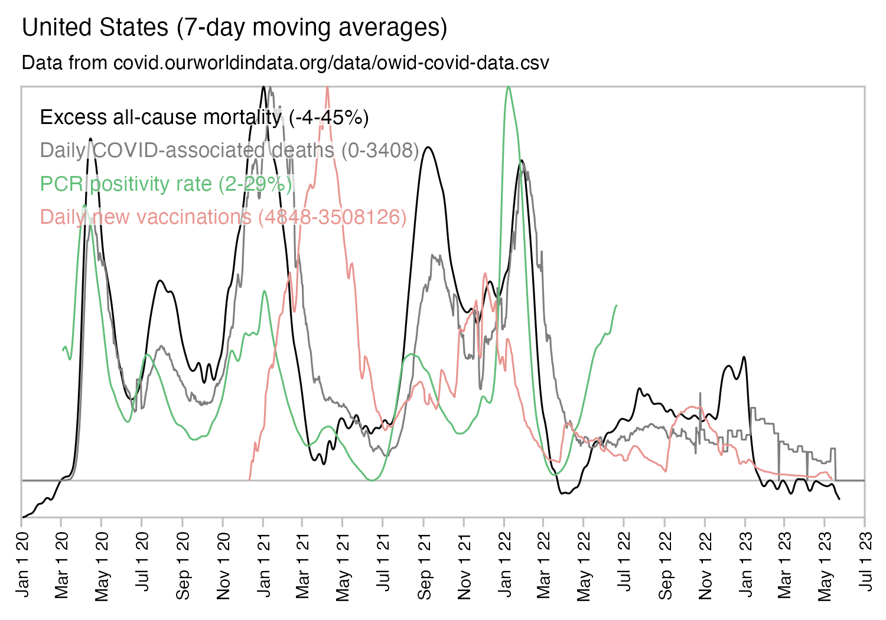
library(ggplot2)
# download.file("https://covid.ourworldindata.org/data/owid-covid-data.csv","owid-covid-data.csv")
t=read.csv("owid-covid-data.csv")
t2=t[,c("date","location","excess_mortality","positive_rate")]
t3=t2[t2[,2]%in%c("Sweden","Finland","Denmark","Norway"),]
mav=\(x,y){l=length(x);s=e=y%/%2;if(y%%2==0)s=s-1;setNames(sapply(1:l,\(i)mean(x[max(1,i-s):min(l,i+e)],na.rm=T)),names(x))}
naap=\(x)zoo::na.approx(x,na.rm=F)
t3[,3]=tapply(t3[,3],t3[,2],\(x)mav(naap(x),14))|>unlist()
t3[,4]=100*tapply(t3[,4],t3[,2],\(x)mav(naap(x),14))|>unlist()
t3$date=as.Date(t3$date)
xstart=as.Date("2020-01-01")
xend=as.Date("2023-06-01")
candidates=c(sapply(c(1,2,5),\(x)x*10^c(-2:5)))
ybreak=candidates[which.min(abs(candidates-max(t3[,3],na.rm=T)/6))]
ybreak2=candidates[which.min(abs(candidates-max(t3[,4],na.rm=T)/6))]
ystart=min(0,ybreak*floor(min(t3[,3],na.rm=T)/ybreak))
yend=ybreak*ceiling(max(t3[,3],na.rm=T)/ybreak)
yend2=ybreak2*ceiling(max(t3$positive_rate,na.rm=T)/ybreak2)
secmult=yend/yend2
group=factor(t3$location,levels=unique(t3$location))
hue=c(0,210,100,60,300,30,170,250)+15
color=c("black",hcl(hue,60,70),"gray50",hcl(hue,50,40))
ggplot(t3,aes(x=date,y=excess_mortality,color=group))+
geom_hline(yintercept=0,color="gray80",size=.25)+
geom_line(size=.3)+
geom_line(aes(y=secmult*positive_rate),linetype=2,size=.25)+
coord_cartesian(clip="off")+
scale_x_date(limits=c(xstart,xend),breaks=seq(xstart,xend,"2 months"),expand=expansion(mult=0),date_labels="%b 1 %y")+
scale_y_continuous(limits=c(ystart,yend),breaks=seq(ystart,yend,ybreak),expand=expansion(mult=c(0,0)),sec.axis=sec_axis(trans=~./secmult,breaks=seq(0,yend2,ybreak2),name="Percentage of positive PCR tests (dashed)"))+
labs(y="Excess mortality percent (solid)")+
ggtitle("Excess mortality compared to percentage of positive PCR tests (14-day moving averages)","Data from covid.ourworldindata.org/data/owid-covid-data.csv")+
scale_color_manual(values=color)+
guides(color=guide_legend(nrow=1,override.aes=list(fill=NA)))+
theme(
axis.text=element_text(size=6,color="black"),
axis.text.x=element_text(angle=90,vjust=.5,hjust=1),
axis.ticks=element_blank(),
axis.ticks.length=unit(0,"cm"),
axis.ticks.x=element_line(linewidth=.3,color="gray80"),
axis.ticks.length.x=unit(-.07,"cm"),
axis.title=element_text(size=8),
axis.title.x=element_blank(),
legend.background=element_blank(),
legend.key=element_rect(fill="white"),
legend.box.just="center",
legend.box.margin=margin(0,unit="cm"),
legend.box.spacing=unit(0,"in"),
legend.direction="vertical",
legend.justification="center",
legend.margin=margin(-8,0,2,0),
legend.position="top",
legend.text=element_text(size=7,vjust=.5),
legend.title=element_blank(),
panel.background=element_rect(fill="white"),
panel.border=element_rect(color="gray80",fill=NA,size=.3),
panel.grid=element_blank(),
# panel.grid.major.x=element_line(size=.2,color="gray90"),
plot.background=element_rect(fill="white"),
plot.subtitle=element_text(size=7),
plot.title=element_text(size=8)
)
ggsave("1.png",width=5,height=3.5)
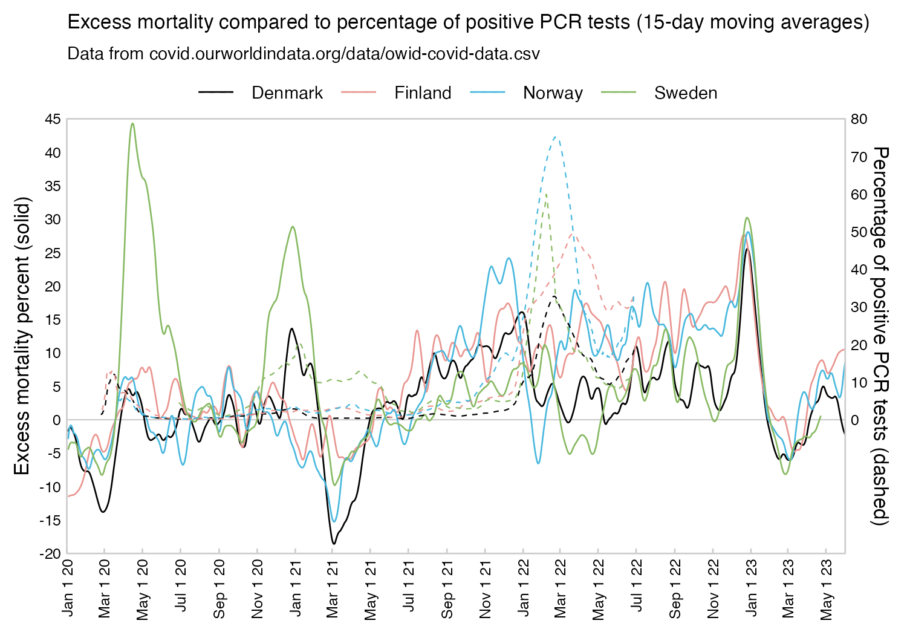
# install.packages("BiocManager")
# BiocManager::install("ComplexHeatmap")
# install.packages("circlize"
# install.packages("colorspace")
library(ComplexHeatmap)
library(colorspace)
library(circlize)
# download.file("https://covid.ourworldindata.org/data/owid-covid-data.csv","owid-covid-data.csv")
t=read.csv("owid-covid-data.csv")
t2=t[t$location%in%t$location[t$population>=1e6],]
t2=t2[,c("date","location","positive_rate","new_vaccinations_smoothed_per_million","excess_mortality")]
ag=aggregate(t2[,3:5],list(sub("-..$","",t2$date),t2[,2]),mean,na.rm=T)
ag=ag[ag[,2]%in%names(which(tapply(rowSums(is.na(ag[,3:5])),ag[,2],sum)<=50)),]
countryorder=strsplit("Canada
United States
Mexico
Guatemala
Costa Rica
Panama
Jamaica
Dominican Republic
Colombia
Ecuador
Peru
Bolivia
Paraguay
Uruguay
Chile
Argentina
Norway
Sweden
Denmark
United Kingdom
Ireland
Netherlands
Belgium
Germany
Austria
Switzerland
France
Portugal
Spain
Italy
Finland
Estonia
Latvia
Lithuania
Russia
Poland
Czechia
Slovakia
Slovenia
Croatia
Serbia
Kosovo
North Macedonia
Albania
Greece
Moldova
Romania
Bulgaria
Hungary
Armenia
Georgia
Azerbaijan
Turkey
Iran
Israel
Kuwait
Mongolia
Japan
South Korea
Hong Kong
Taiwan
Philippines
Thailand
Malaysia
Australia
South Africa","\n")[[1]]
ag=ag[ag[,2]%in%countryorder,]
ag=ag[order(match(ag[,2],countryorder)),]
df1=data.frame(x=ag[,1],y=paste(ag[,2],"(excess mortality percent)"),z=ag$excess_mortality)
df2=data.frame(x=ag[,1],y=paste(ag[,2],"(percentage of positive PCR tests)"),z=100*ag$positive_rate)
df3=data.frame(x=ag[,1],y=paste(ag[,2],"(new vaccinations per 10,000)"),z=ag$new_vaccinations_smoothed_per_million/100)
sc1=df1;sc1[,3]=sc1[,3]/170
sc2=df2;sc2[,3]=sc2[,3]/70
sc3=df3;sc3[,3]=sc3[,3]/150
l2w=\(x,row=1,col=2,val=3,sort=F){u1=unique(x[,row]);u2=unique(x[,col]);out=matrix(nrow=length(u1),ncol=length(u2),dimnames=list(u1,u2));out[cbind(x[,row],x[,col])]=x[,val];out}
ind=rep(1:nrow(sc1),each=3)+(0:2*nrow(sc1))
m=t(l2w(rbind(sc1,sc2,sc3)[ind,]))
disp=t(l2w(rbind(df1,df2,df3)[ind,]))
png("1.png",w=4000,h=10000,res=72)
ht_opt$COLUMN_ANNO_PADDING=unit(0,"mm")
ht_opt$ROW_ANNO_PADDING=unit(0,"mm")
rowmax=apply(m,1,\(x)x==max(x,na.rm=T))
rowmax[is.na(rowmax)]=F
Heatmap(
m,
show_heatmap_legend=F,
show_column_names=F,
show_row_names=F,
width=unit(ncol(m)*30,"pt"),
height=unit(nrow(m)*30,"pt"),
row_dend_width=unit(200,"pt"),
clustering_distance_rows="euclidean",
cluster_columns=F,
cluster_rows=F,
row_split=rep(seq(nrow(m)/3),each=3),
gap=unit(3,"mm"),
row_title=NULL,
rect_gp=gpar(col="gray80",lwd=0),
top_annotation=columnAnnotation(text=anno_text(gt_render(colnames(m),padding=unit(c(3,3,3,3),"mm")),just="left",rot=90,location=unit(0,"npc"),gp=gpar(fontsize=17,border="gray70",lwd=1))),
bottom_annotation=columnAnnotation(text=anno_text(gt_render(colnames(m),padding=unit(c(3,3,3,3),"mm")),just="left",rot=270,gp=gpar(fontsize=17,border="gray70",lwd=1))),
left_annotation=rowAnnotation(text=anno_text(gt_render(rownames(m),padding=unit(c(3,3,3,3),"mm")),just="right",location=unit(1,"npc"),gp=gpar(fontsize=17,border="gray70",lwd=1))),
right_annotation=rowAnnotation(text=anno_text(gt_render(rownames(m),padding=unit(c(3,3,3,3),"mm")),just="left",location=unit(0,"npc"),gp=gpar(fontsize=17,border="gray70",lwd=1))),
col=colorRamp2(seq(-1,1,,9),hex(HSV(c(210,210,210,210,0,0,0,0,0),c(.7,.7,.6,.3,0,.3,.6,.7,.7),c(.3,.65,1,1,1,1,1,.65,.3)))),
cell_fun=\(j,i,x,y,w,h,fill)grid.text(sprintf("%.0f",disp[i,j]),x,y,gp=gpar(fontface=ifelse(rowmax[j,i],4,"plain"),fontsize=16,col=ifelse(abs(m[i,j])>=.5,"white","black")))
)
dev.off()
system("mogrify -gravity center -trim -border 16 -bordercolor white 1.png")
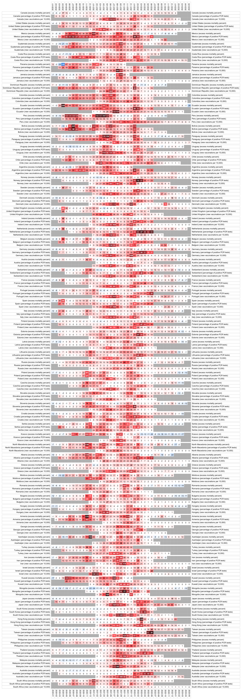
This displays only dates where the column for excess mortality is not empty.
$ wget -q https://raw.githubusercontent.com/owid/covid-19-data/master/public/data/owid-covid-data.csv $ brew install csvtk [...] $ csvtk -T cut -flocation,date,excess_mortality,people_vaccinated_per_hundred,positive_rate,new_tests owid-covid-data.csv|awk -F\\t 'NR==1||($1=="Taiwan"&&$3)'|csvtk -t pretty location date excess_mortality people_vaccinated_per_hundred positive_rate new_tests -------- ---------- ---------------- ----------------------------- ------------- --------- Taiwan 2020-01-31 -5.91 0.0096 93.0 Taiwan 2020-02-29 10.38 0.0037 511.0 Taiwan 2020-03-31 -8.55 0.0177 924.0 Taiwan 2020-04-30 -2.25 0.0005 495.0 Taiwan 2020-05-31 -9.21 0.0007 237.0 Taiwan 2020-06-30 -2.32 0.0008 210.0 Taiwan 2020-07-31 -3.57 0.0063 235.0 Taiwan 2020-08-31 -9.72 0.0008 215.0 Taiwan 2020-09-30 0.99 0.0032 260.0 Taiwan 2020-10-31 -9.25 0.0031 93.0 Taiwan 2020-11-30 -0.25 0.0204 337.0 Taiwan 2020-12-31 2.84 0.0052 507.0 Taiwan 2021-01-31 3.33 0.0021 872.0 Taiwan 2021-02-28 -0.27 0.0041 197.0 Taiwan 2021-03-31 -7.63 0.06 0.0048 965.0 Taiwan 2021-04-30 -4.6 0.24 0.0066 854.0 Taiwan 2021-05-31 1.88 0.0232 28428.0 Taiwan 2021-06-30 15.29 8.38 0.0027 30914.0 Taiwan 2021-07-31 1.58 0.0008 17523.0 Taiwan 2021-08-31 0.06 42.01 0.0004 28547.0 Taiwan 2021-09-30 -0.41 55.43 0.0003 19966.0 Taiwan 2021-10-31 -4.74 72.05 0.0004 11066.0 Taiwan 2021-11-30 8.16 76.37 0.0006 17369.0 Taiwan 2021-12-31 4.94 78.32 0.0016 14391.0 Taiwan 2022-01-31 -0.39 0.0026 10521.0 Taiwan 2022-02-28 -1.46 80.95 0.0032 19725.0 Taiwan 2022-03-31 1.29 81.43 0.0053 34369.0 Taiwan 2022-04-30 -3.43 0.1526 56200.0 Taiwan 2022-05-31 15.75 86.25 0.8106 108382.0 Taiwan 2022-06-30 43.64 88.64 Taiwan 2022-07-31 17.57 89.22 Taiwan 2022-08-31 17.66 90.08 Taiwan 2022-09-30 16.55 90.91 Taiwan 2022-10-31 11.45 91.14 Taiwan 2022-11-30 21.39 91.27 Taiwan 2022-12-31 16.28 Taiwan 2023-01-31 9.51 91.47 Taiwan 2023-02-28 20.82 91.53 Taiwan 2023-03-31 12.93 Taiwan 2023-04-30 1.21 Taiwan 2023-05-31 14.95 Taiwan 2023-06-30 17.24 Taiwan 2023-07-31 14.58
library(ggplot2)
# download.file("https://covid.ourworldindata.org/data/owid-covid-data.csv","owid-covid-data.csv")
t=read.csv("owid-covid-data.csv")
t2=t[,c("date","location","excess_mortality","positive_rate","new_vaccinations","continent")]
# # replace all NA values with zeroes
# t2$new_vaccinations[is.na(t2$new_vaccinations)]=0
# # replace NA values after the first non-NA with zeroes
# t2$new_vaccinations=unlist(split(t2$new_vaccinations,t2$location,\(x){nna=which(!is.na(x))[1];ifelse(is.na(x)&seq_along(x)>nna,0,x)}))
# pick=names(tail(sort(tapply(t2[,4],t2[,2],\(x)sum(!is.na(x)))+tapply(t2[,3],t2[,2],\(x)sum(!is.na(x)))),32))
pick=strsplit("Argentina,Australia,Bolivia,Brazil,Chile,Colombia,Ecuador,Malaysia,New Zealand,Paraguay,Peru,Philippines,Singapore,South Africa,Suriname,Thailand,Uruguay",",")[[1]]
t2=t2[t2$location%in%pick,]
mav=\(x,y){l=length(x);s=e=y%/%2;if(y%%2==0)s=s-1;setNames(sapply(1:l,\(i)mean(x[max(1,i-s):min(l,i+e)],na.rm=T)),names(x))}
naap=\(x)zoo::na.approx(x,na.rm=F)
cor1=sapply(split(t2,t2$location),\(x)tryCatch(cor(mav(naap(x[,3]),7),mav(naap(x[,4]),3),use="complete.obs"),error=\(x)NA))
cor2=sapply(split(t2,t2$location),\(x)tryCatch(cor(mav(naap(x[,3]),7),mav(naap(x[,5]),3),use="complete.obs"),error=\(x)NA))
pick=names(which(cor1&cor2))
xy=na.omit(data.frame(x=cor1[pick],y=cor2[pick]))
expand=(max(xy)-min(xy))/20
# lims=c(min(apply(xy,2,range))-expand,max(apply(xy,2,range))+expand)
lims=c(min(xy)-.05,1)
k=as.factor(setNames(t$continent,t$location)[rownames(xy)])
color=hcl(sample(seq(15,375,,nlevels(k)+1)[-1]),95,60)
ggplot(xy,aes(x,y))+
geom_vline(xintercept=c(0,1),color="gray80",linewidth=.3)+
geom_hline(yintercept=c(0,1),color="gray80",linewidth=.3)+
geom_abline(linetype="dashed",color="gray80",linewidth=.3)+
ggforce::geom_mark_hull(aes(color=k,fill=k),concavity=1000,radius=unit(.4,"lines"),expand=unit(.4,"lines"),alpha=.2,size=.15)+
geom_point(aes(color=k),size=.5)+
# geom_text(aes(color=k),label=name,size=2.2,vjust=-.7)+
ggrepel::geom_text_repel(aes(color=k),label=rownames(xy),size=2.2,max.overlaps=Inf,segment.size=.1,min.segment.length=.2,box.padding=.07)+
coord_cartesian(xlim=lims,ylim=lims,expand=F,clip="off")+
scale_x_continuous(breaks=seq(-1,1,.2))+
scale_y_continuous(breaks=seq(-1,1,.2))+
labs(x="Correlation between excess mortality and daily percentage of positive PCR tests",y="Correlation between excess mortality and daily number of new vaccinations")+
scale_fill_manual(values=color)+
scale_color_manual(values=color)+
theme(
axis.text=element_text(size=6,color="black"),
axis.text.y=element_text(angle=90,vjust=1,hjust=.5),
axis.ticks=element_blank(),
axis.ticks.length=unit(0,"cm"),
axis.title=element_text(size=8),
legend.position="none",
panel.background=element_rect(fill="white"),
panel.border=element_rect(color="gray80",fill=NA,linewidth=.3),
panel.grid.major=element_line(color="gray90",linewidth=.2),
plot.margin=margin(.7,.7,.7,.7,"lines")
)
ggsave("1.png",width=4.5,height=4.5)
library(ggplot2)
# download.file("https://covid.ourworldindata.org/data/owid-covid-data.csv","owid-covid-data.csv")
t=read.csv("owid-covid-data.csv")
t2=t[grepl("2021",t$date)&t$location%in%strsplit("Australia,Chile,Colombia,Ecuador,New Zealand,Peru,South Africa,Argentina,Bolivia,Brazil,Malaysia,Paraguay,Philippines,Singapore,Suriname,Thailand,Uruguay",",")[[1]],]
excess=tapply(t2$excess_mortality,t2$location,mean,na.rm=T)
vax=tapply(t2$people_vaccinated_per_hundred,t2$location,\(x){n=zoo::na.approx(x,na.rm=F);n[is.na(n)]=0;mean(n)})
xy=data.frame(x=vax,y=excess)
k=as.factor(setNames(t$continent,t$location)[rownames(xy)])
color=hcl(sample(seq(15,375,,nlevels(k)+1)[-1]),95,60)
candidates=c(sapply(c(1,2,5),\(x)x*10^c(-10:10)))
xstep=candidates[which.min(abs(candidates-max(xy$x)/8))]
ystep=candidates[which.min(abs(candidates-max(xy$y)/6))]
xstart=xstep*floor(min(xy$x)/xstep)
xend=xstep*ceiling(max(xy$x)/xstep)
ystart=ystep*floor(min(xy$y)/ystep)
yend=ystep*ceiling(max(xy$y)/ystep)
ggplot(xy,aes(x,y))+
geom_vline(xintercept=c(xstart,xend),color="gray75",linewidth=.3,lineend="square")+
geom_hline(yintercept=c(ystart,yend),color="gray75",linewidth=.3,lineend="square")+
ggforce::geom_mark_hull(aes(color=k,fill=k),concavity=1000,radius=unit(.3,"lines"),expand=unit(.3,"lines"),alpha=.2,size=.15)+
geom_smooth(method="lm",formula=y~x,size=.35,se=F)+
geom_point(aes(color=k),size=.6)+
geom_text(aes(color=k),label=rownames(xy),size=2.5,vjust=-.7)+
# ggrepel::geom_text_repel(aes(color=k),label=rownames(xy),size=2.5,max.overlaps=Inf,segment.size=.1,min.segment.length=.2,box.padding=.07)+
coord_cartesian(clip="off")+
ggtitle(paste0("Average percentage of vaccinated population in 2021 compared to average\nweekly or monthly excess mortality percent in 2021 (r=",sprintf("%.3f",cor(xy$x,xy$y)),")"),"Data from covid.ourworldindata.org/data/owid-covid-data.csv, R code: sars2.net/stat.html")+
labs(x="Average percentage of vaccinated population in 2021",y="Average weekly or monthly excess mortality percent in 2021")+
scale_x_continuous(limits=c(xstart,xend),breaks=seq(xstart,xend,xstep),expand=expansion(0))+
scale_y_continuous(limits=c(ystart,yend),breaks=seq(ystart,yend,ystep),expand=expansion(0))+
scale_fill_manual(values=color)+
scale_color_manual(values=color)+
theme(
axis.text=element_text(size=7,color="black"),
axis.text.y=element_text(angle=90,vjust=1,hjust=.5),
axis.ticks=element_blank(),
axis.ticks.length=unit(0,"lines"),
axis.title=element_text(size=8),
legend.position="none",
panel.background=element_rect(fill="white"),
panel.grid.major=element_line(color="gray85",linewidth=.2),
plot.margin=margin(.5,.6,.5,.6,"lines"),
plot.subtitle=element_text(size=7.5),
plot.title=element_text(size=9)
)
ggsave("1.png",width=5,height=4)

download.file("https://covid.ourworldindata.org/data/owid-covid-data.csv","owid-covid-data.csv")
t=read.csv("owid-covid-data.csv")
t2=t[t$location%in%c("Germany","Australia","South Korea","Canada"),]
naap=\(x)zoo::na.approx(x,na.rm=F)
pcr=unlist(tapply(t2$positive_rate,t2$location,\(x){x[1:(which(!is.na(x))[1]-1)]=0;naap(x)}))
vax=unlist(tapply(t2$new_vaccinations,t2$location,\(x){x[1:(which(!is.na(x))[1]-1)]=0;naap(x)}))
excess=unlist(tapply(t2$excess_mortality,t2$location,naap))
d=data.frame(location=t2$location,pcr,vax,excess)[t2$date<"2023-01-01"&t2$date>="2021-01-01",]
cor_vax_excess=sapply(split(d,d$location),\(x)cor(x$excess,x$vax,use="complete.obs"))
cor_pcr_excess=sapply(split(d,d$location),\(x)cor(x$excess,x$pcr,use="complete.obs"))
round(cbind(cor_vax_excess,cor_pcr_excess),2)
Output:
cor_vax_excess cor_pcr_excess Australia -0.12 0.76 Canada -0.17 0.24 Germany -0.06 -0.03 South Korea -0.11 0.93
This treats the number of new vaccines as zero before the data for the number of new vaccines starts, but in the case of some countries the data for the number of new vaccines starts long after the vaccine rollout, so it might be better to ignore days with no data for the number of new vaccines.
The use="complete.obs" argument for cor only includes values at indexes where neither compared vector is NA.
zoo::na.approx uses linear interpolation to fill in NA values:
> v=c(NA,NA,1,NA,3,NA,NA,NA,2,NA) > zoo::na.approx(v) [1] 1.00 2.00 3.00 2.75 2.50 2.25 2.00 > zoo::na.approx(v,na.rm=F) # don't remove NA values from start or end of vector [1] NA NA 1.00 2.00 3.00 2.75 2.50 2.25 2.00 NA
> download.file("https://covid.ourworldindata.org/data/owid-covid-data.csv","owid-covid-data.csv")
> t=read.csv("owid-covid-data.csv")
> t2=t[nrow(t):1,]
> t2=t2[!is.na(t2$people_vaccinated_per_hundred),]
> t2=t2[!duplicated(t2$location),]
> t2=t2[order(-t2$population),]
> t2[1:10,c("people_vaccinated_per_hundred","location","population","date")]|>print.data.frame(row.names=F)
people_vaccinated_per_hundred location population date
70.49 World 7975105024 2023-09-17
78.04 Asia 4721383370 2023-09-17
66.30 Lower middle income 3432097300 2023-09-17
83.42 Upper middle income 2525921300 2023-09-16
38.63 Africa 1426736614 2023-08-20
91.89 China 1425887360 2023-02-09
72.50 India 1417173120 2023-09-17
79.86 High income 1250514600 2023-09-16
70.20 Europe 744807803 2023-09-16
32.58 Low income 737604900 2023-09-05
With my custom R functions, you could write the same code using a concatenative programming style like this:
`|`=magrittr::`%>%` # get a single-character pipe operator
rc\(x='stdin",check.names=F,...)read.csv(x,check.names=check.names,...) # read CSV
ubl=\(x,...){x=x[nrow(x):1,];x=x[!duplicated(x[,c(...)]),];x[nrow(x):1,]} # select unique rows by column and keep the last row with each unique value
nnan=\(x,y)x[!is.na(x[,y]),] # select rows where the specified column is not NA
obcr=\(x,y){if(y<0)y=ncol(x)+y+1;x[order(-x[,y]),]} # order by column reverse
h=\(x,y=1)head(x,y) # head
K=\(x,...)x[,sapply(match.call(expand.dots=F)$...,deparse)] # select kolumns
tab2=\(x)apply(apply(rbind(colnames(x),x),2,\(c)sprintf(paste0('%",max(nchar(c)),'s'),c)),1,paste,collapse=" ") # format monospace table with rownames
tap2=\(x)writeLines(tab2(x)) # print monospace table with rownames
"owid-covid-data.csv"|rc|nnan("people_vaccinated_per_hundred")|ubl("location")|obcr("population")|h(10)|K(people_vaccinated_per_hundred,location,population,date)|tap2
download.file("https://covid.ourworldindata.org/data/owid-covid-data.csv","owid-covid-data.csv")
t=read.csv("owid-covid-data.csv")
t2=t[t$population>=1e7,]
t2=na.omit(t2[,c("date","location","new_deaths","hosp_patients")])
t2=t2[t2$hosp_patients!=0,]
m=tapply(1000*t2$new_deaths/t2$hosp_patients,list(t2$location,sub("...$","",t2$date)),mean,na.omit=T)
m=m[rowSums(is.na(m))<15,]
m=m[order(-rowMeans(m,na.rm=T)),]
disp=round(m)
m=m^.7
pheatmap::pheatmap(
m,
filename="0.png",
legend=F,
cluster_rows=F,
cluster_cols=F,
cellwidth=18,
cellheight=18,
fontsize=9,
fontsize_number=8,
border_color=NA,
display_numbers=disp,
na_col="white",
number_color=ifelse(m>.82*max(m,na.rm=T),"white","black"),
colorRampPalette(colorspace::hex(colorspace::HSV(c(210,210,210,160,110,60,40,20,0,0,0),c(0,.25,rep(.5,9)),c(rep(1,9),.5,0))))(256)
)
system("convert -gravity center -pointsize 40 label:'COVID deaths per 1,000 hospitalized patients (monthly average of daily values). Source: covid.ourworldindata.org/data/owid-covid-data.csv.' -gravity north -splice 0x20 0.png -append 1.png")
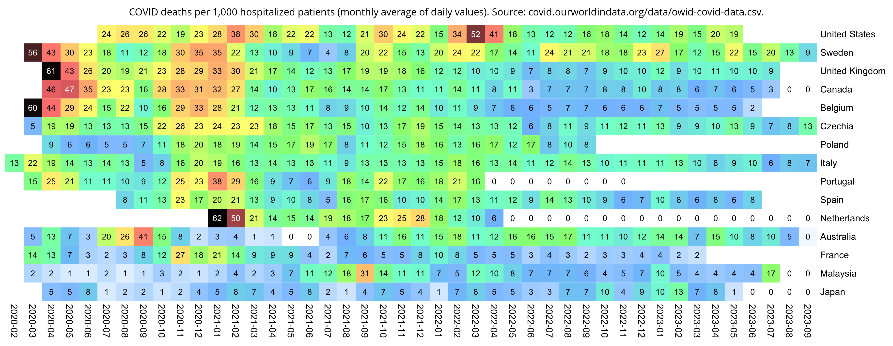
library(ggplot2)
library(zoo)
mav=\(x,y){l=length(x);s=e=y%/%2;if(y%%2==0)s=s-1;setNames(sapply(1:l,\(i)mean(x[max(1,i-s):min(l,i+e)],na.rm=T)),names(x))}
download.file("https://healthdata.gov/api/views/j8mb-icvb/rows.csv","statespcr.csv") # https://healthdata.gov/dataset/COVID-19-Diagnostic-Laboratory-Testing-PCR-Testing/j8mb-icvb
download.file("https://data.cdc.gov/api/views/xkkf-xrst/rows.csv","statesexcess.csv") # https://www.cdc.gov/nchs/nvss/vsrr/covid19/excess_deaths.htm
pcr=read.csv("statespcr.csv")
excess=read.csv("statesexcess.csv")
for(state in intersect(pcr$state_name,excess$State)){
pcr2=pcr[pcr$state_name==state,]
pcr3=pcr2[pcr2$overall_outcome=="Positive",c(6,7)]|>merge(pcr2[pcr2$overall_outcome=="Negative",c(6,7)],by=1,all=T)
pos=mav(pcr3[,2],21)
neg=mav(pcr3[,3],21)
df4=data.frame(date=as.Date(pcr3$date),pcrrate=100*pos/(pos+neg))
df4$pcrrate[mav(rowSums(pcr3[,-1]),10)<30]=NA
excess2=excess[excess$State==state&excess$Outcome=="All causes"&excess$Year>=2020&excess$Week.Ending.Date<="2023-05-01",]
df5=data.frame(date=as.Date(excess2$Week.Ending.Date)-3,excess=100*(excess2$Observed.Number/excess2$Average.Expected.Count-1))
xy=merge(df5,df4,all=T)
nonna=1:tail(which(!is.na(xy$excess)),1)
xy$excess[nonna]=mav(zoo::na.approx(xy$excess[nonna],na.rm=F),3)
xstart=as.Date("2020-01-01")
xend=as.Date("2023-05-01")
xy=xy[xy$date>=xstart&xy$date<=xend,]
# candidates=c(sapply(c(1,2,5),\(x)x*10^c(-2:5)))
# ystep=candidates[which.min(abs(candidates-max(xy[,2],na.rm=T)/6))]
# ystep2=candidates[which.min(abs(candidates-max(xy[,3],na.rm=T)/6))]
# ystart=min(0,ystep*floor(min(xy[,2],na.rm=T)/ystep))
# yend=ystep*ceiling(max(xy[,2],na.rm=T)/ystep)
# yend2=ystep2*ceiling(max(xy[,3],na.rm=T)/ystep2)
ystart=-20;yend=120;yend2=50;ystep=20;ystep2=10
secmult=yend/yend2
seccolor=hcl(135,70,50)
ggplot(xy,aes(x=date,y=excess))+
geom_hline(yintercept=c(ystart,0,yend),color="gray75",linewidth=.3,lineend="square")+
geom_vline(xintercept=c(xstart,xend),color="gray75",linewidth=.3,lineend="square")+
geom_line(linewidth=.3)+
geom_line(aes(y=secmult*pcrrate),linewidth=.3,color=seccolor)+
coord_cartesian(xlim=c(xstart,xend),ylim=c(ystart,yend),clip="off")+
scale_x_date(breaks=seq(xstart,xend,"2 months"),expand=expansion(0),date_labels="%b 1 %y")+
scale_y_continuous(breaks=seq(ystart,yend,ystep),expand=expansion(0),sec.axis=sec_axis(trans=~./secmult,breaks=seq(0,yend2,ystep2),name="Percentage of positive PCR tests (21-day moving average)"))+
labs(y="Excess mortality percent (21-day moving average)")+
ggtitle(paste0(state," (r=",sprintf("%.2f",cor(xy[,2],xy[,3],use="complete.obs")),")"))+
theme(
axis.text=element_text(size=6,color="black"),
axis.text.x=element_text(angle=90,vjust=.5,hjust=1),
axis.ticks=element_line(linewidth=.3,color="gray75"),
axis.ticks.length=unit(.2,"lines"),
axis.title=element_text(size=7.5),
axis.title.y.right=element_text(color=seccolor,margin=margin(0,0,0,5)),
axis.text.y.right=element_text(color=seccolor),
axis.title.x=element_blank(),
panel.background=element_rect(fill="white"),
panel.grid=element_blank(),
plot.subtitle=element_text(size=7),
plot.title=element_text(size=9)
)
ggsave(paste0(state,".png"),width=5,height=3.5)
}
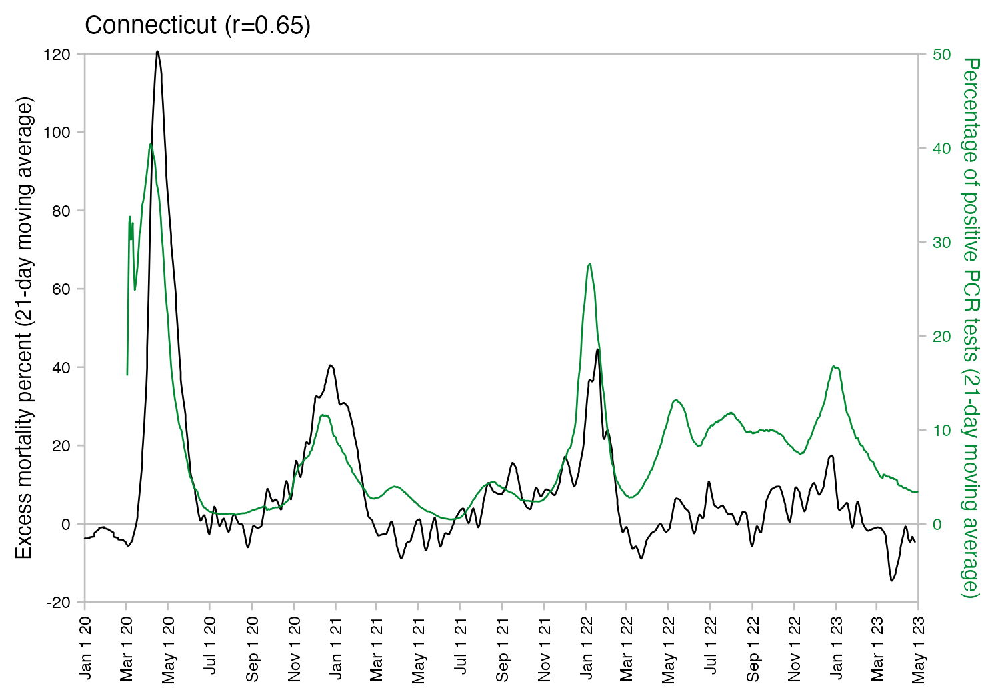
CDC dataset: https://data.cdc.gov/NCHS/Provisional-COVID-19-Deaths-by-Sex-and-Age/9bhg-hcku.
# install.packages("BiocManager")
# BiocManager::install("ComplexHeatmap")
# install.packages("circlize"
# install.packages("colorspace")
library(ComplexHeatmap)
library(circlize) # for colorRamp2
library(colorspace)
# download.file("https://data.cdc.gov/api/views/9bhg-hcku/rows.csv?accessType=DOWNLOAD","Provisional_COVID-19_Deaths_by_Sex_and_Age.csv")
t=read.csv("d/cd/Provisional_COVID-19_Deaths_by_Sex_and_Age.csv")
t2=t[t$Group=="By Month"&t$Sex=="All Sexes",]
age1=t2[t2$Age.Group%in%c("All Ages"),]
age2=t2[t2$Age.Group%in%c("55-64 years","65-74 years","75-84 years","85 years and over"),]
ag1=aggregate(age1$COVID.19.Deaths,list(paste0(age1$Year,"/",sprintf("%02d",age1$Month)),age1$State),sum)
ag2=aggregate(age2$COVID.19.Deaths,list(paste0(age2$Year,"/",sprintf("%02d",age2$Month)),age2$State),sum)
m=wide(cbind(ag1[,-3],100*(1-ag2[,3]/ag1[,3])))|t
disp=ifelse(is.na(m),"",round(m))
rowmax=t(apply(m,1,\(x)x==max(x,na.rm=T)))
rowmax[is.na(rowmax)]=F
png("1.png",w=ncol(m)*30+1000,h=nrow(m)*30+1000,res=72)
ht_opt$COLUMN_ANNO_PADDING=unit(0,"mm")
ht_opt$ROW_ANNO_PADDING=unit(0,"mm")
maxcolor=.8*max(m,na.rm=T)
Heatmap(
m,
show_heatmap_legend=F,
show_column_names=F,
show_row_names=F,
width=unit(ncol(m)*30,"pt"),
height=unit(nrow(m)*30,"pt"),
row_dend_width=unit(200,"pt"),
cluster_columns=F,
cluster_rows=F,
na_col="white",
column_title=stringr::str_wrap("Percentage of COVID deaths in people between ages 0-54 out of all COVID deaths (data.cdc.gov/NCHS/Provisional-COVID-19-Deaths-by-Sex-and-Age/9bhg-hcku). There is a large number of empty squares because the number of deaths in the CDC dataset is hidden on rows with 1-9 deaths, and in many states the monthly number of COVID deaths was less than 10 in one or more age groups.",160),
column_title_gp=gpar(fontsize=22),
rect_gp=gpar(col="gray80",lwd=0),
top_annotation=columnAnnotation(text=anno_text(gt_render(colnames(m),padding=unit(c(3,3,3,3),"mm")),just="left",rot=90,location=unit(0,"npc"),gp=gpar(fontsize=17,border="gray70",lwd=1))),
bottom_annotation=columnAnnotation(text=anno_text(gt_render(colnames(m),padding=unit(c(3,3,3,3),"mm")),just="left",rot=270,gp=gpar(fontsize=17,border="gray70",lwd=1))),
left_annotation=rowAnnotation(text=anno_text(gt_render(rownames(m),padding=unit(c(3,3,3,3),"mm")),just="right",location=unit(1,"npc"),gp=gpar(fontsize=17,border="gray70",lwd=1))),
right_annotation=rowAnnotation(text=anno_text(gt_render(rownames(m),padding=unit(c(3,3,3,3),"mm")),just="left",location=unit(0,"npc"),gp=gpar(fontsize=17,border="gray70",lwd=1))),
col=colorRamp2(seq(-maxcolor,maxcolor,,9),hex(HSV(c(210,210,210,210,0,0,0,0,0),c(.7,.7,.6,.3,0,.3,.6,.7,.7),c(.3,.65,1,1,1,1,1,.65,.3)))),
cell_fun=\(j,i,x,y,w,h,fill)grid.text(disp[i,j],x,y,gp=gpar(fontface=ifelse(rowmax[i,j],4,"plain"),fontsize=16,col=ifelse(abs(m[i,j])>=maxcolor*.5,"white","black")))
)
dev.off()
system("mogrify -gravity center -trim -border 16 -bordercolor white 1.png")

library(ggplot2)
library(usmap)
seg=\(x,y)min(x,na.rm=T)+y*(max(x,na.rm=T)-min(x,na.rm=T))
isoweek=\(year,week,weekday=1){d=as.Date(paste0(year,"-1-4"));d-(as.integer(format(d,"%w"))+6)%%7-1+7*(week-1)+weekday}
download.file("https://health.data.ny.gov/api/views/xdss-u53e/rows.csv?accessType=DOWNLOAD","New_York_State_Statewide_COVID-19_Testing.csv")
i=15
t=read.csv("New_York_State_Statewide_COVID-19_Testing.csv")
t=t[t$Geography=="COUNTY",]
d=as.Date(t$Test.Date,"%m/%d/%Y")
week=as.numeric(format(d,"%V"))
t=t[week==i&as.numeric(format(d,"%Y"))==2020,]
weekly=aggregate(t[,c(3,5)],list(t$County),sum)
pct=ifelse(weekly[,2]<10,NA,weekly[,2]/weekly[,3]*100)
pct[pct<5]=-10
pct[pct>60]=60
lev=as.factor(ifelse(is.na(pct),NA,10*floor(pct/10)))
d=data.frame(fips=fips("New York",t$County),values=as.factor(lev))
color=c(hcl(105,40,100),hcl(c(90,60,40,20,0,0,0)+15,c(60,70,70,80,90,100,110),c(90,90,80,70,50,30,10)))
map=us_map(include="NY")
label=c("Less than 10 tests",paste0(c(0,5,seq(10,60,10)),"% or higher"))
ystep=.045
legx=seg(map$x,.14)
legy=seg(map$y,seq(.86,,-ystep,length(label)))
legend=data.frame(x=legx,y=legy,label)
half=(max(map$y)-min(map$y))*ystep/2
rect=data.frame(xmin=legx-2.75*half,xmax=legx-.75*half,ymin=legy-half,ymax=legy+half)
plot_usmap(data=d,linewidth=.03,include="NY")+
geom_text(data=legend,aes(x=x,y=y,label=label),size=3.4,hjust=0)+
geom_rect(data=rect,aes(xmin=xmin,xmax=xmax,ymin=ymin,ymax=ymax),fill=c("gray85",color)[1:nrow(legend)],color="gray70",size=.1)+
annotate("label",x=seg(map$x,.5),y=seg(map$y,.95),label=paste0("PCR positivity rate on week ",i," of 2020 (",isoweek(2020,i)," to ",isoweek(2020,i,7),")"),hjust=.5,,fill=alpha("white",.7),label.r=unit(0,"lines"),label.padding=unit(.15,"lines"),label.size=0)+
annotate("text",x=seg(map$x,.06),y=seg(map$y,.045),label="Data: health.data.ny.gov/Health/New-York-State-Statewide-COVID-19-Testing-Archived/xdss-u53e\nR code: sars2.net/stat.html",hjust=0,size=2.1)+
scale_fill_manual(breaks=seq(-10,60,10),values=color,na.value="gray85")+
theme(
legend.position="none",
panel.background=element_rect(color=NA,fill="white"),
plot.background=element_rect(color=NA,fill="white")
)
ggsave("1.png",width=6,height=6)

This script makes a table with one row for each combination of state and day and then calculates a correlation coefficient between a column for excess mortality percent and a column for the cumulative number of vaccine doses per capita. However unlike in the case of some country-level comparisons, the correlation here was close to zero regardless of whether I looked at data from 2021 or 2022 or both.
# https://data.cdc.gov/Vaccinations/COVID-19-Vaccinations-in-the-United-States-Jurisdi/unsk-b7fc
download.file("https://data.cdc.gov/api/views/unsk-b7fc/rows.csv","COVID-19_Vaccinations_in_the_United_States_Jurisdiction.csv")
# https://www.cdc.gov/nchs/nvss/vsrr/covid19/excess_deaths.htm
download.file("https://data.cdc.gov/api/views/xkkf-xrst/rows.csv","statesexcess.csv")
# https://www.census.gov/data/tables/time-series/demo/popest/2020s-state-total.html
download.file("https://www2.census.gov/programs-surveys/popest/datasets/2020-2022/state/totals/NST-EST2022-ALLDATA.csv","NST-EST2022-ALLDATA.csv")
pop=read.csv("NST-EST2022-ALLDATA.csv")
pop=setNames(pop$POPESTIMATE2021,pop$NAME)
statecode=read.csv("https://raw.githubusercontent.com/jasonong/List-of-US-States/master/states.csv",r=2)
t=read.csv("COVID-19_Vaccinations_in_the_United_States_Jurisdiction.csv")
d=na.omit(data.frame(date=as.Date(t$Date,"%m/%d/%Y"),state=statecode[t$Location,],vax=t$Distributed))
excess=read.csv("statesexcess.csv")
excess=excess[excess$Outcome=="All causes",]
d2=data.frame(date=as.Date(excess$Week.Ending.Date)-3,state=excess$State,excess=excess$Excess.Estimate/excess$Average.Expected.Count)
d3=merge(d,d2,all=T)
d3$excess=unlist(tapply(d3$excess,d3$state,zoo::na.approx,na.rm=F))
d3$vaxratio=d3$vax/pop[d3$state]
d4=na.omit(d3[d3$date>="2021-1-1"&d3$date<"2023-1-1",])
cor(d4$vaxratio,d4$excess) # 0.06404972
# install.packages("BiocManager")
# BiocManager::install("ComplexHeatmap")
# install.packages("circlize"
# install.packages("colorspace")
library(ComplexHeatmap)
library(colorspace)
library(circlize)
# download.file("https://github.com/nytimes/covid-19-data/raw/master/us-counties-2020.csv","us-counties-2020.csv")
# download.file("https://www2.census.gov/programs-surveys/popest/datasets/2020-2022/counties/totals/co-est2022-alldata.csv","co-est2022-alldata.csv")
t=read.csv("us-counties-2020.csv")
pop=read.csv("co-est2022-alldata.csv")
pops=setNames(pop[,9],paste0(pop[,4],sprintf("%03d",pop[,5])))
t$fips[t$county=="New York City"]=0
pops["0"]=8773e3
t$pop=pops[as.character(t$fips)]
name=t[!duplicated(t$fips),]
name=setNames(paste0(name$county,", ",name$state),name$fips)
poplim=5e4
t=t[t$pop>=poplim,]
t=na.omit(t)
t=t[t$deaths!=0,]
t=t[order(t$fips),]
t$uncum=unlist(tapply(t$deaths,t$fips,\(x)diff(c(0,x))))
t$week=format(as.Date(t$date),"%Y_%V")
m=tapply(t$uncum/t$pop*1e5,list(t$fips,t$week),sum)
m=m[order(-rowSums(m,na.rm=T)),]
m=head(m,50)
m[is.na(m)]=0
m=m[,colSums(m)>0]
m=m[,-ncol(m)]
week=isoweek(as.numeric(sub("_.*","",colnames(m))),as.numeric(sub(".*_","",colnames(m))),7)
colnames(m)=format(week,"%b %d (%V)")
rownames(m)=paste0(name[rownames(m)]," (pop. ",round(pops[rownames(m)]/1e3),"k)")
disp=round(m)
rowmax=t(apply(m,1,\(x)x==max(x,na.rm=T)))
rowmax[is.na(rowmax)]=F
png("1.png",w=ncol(m)*30+1000,h=nrow(m)*30+1000,res=72)
ht_opt$COLUMN_ANNO_PADDING=unit(0,"mm")
ht_opt$ROW_ANNO_PADDING=unit(0,"mm")
maxcolor=max(m,na.rm=T)
Heatmap(
m,
show_heatmap_legend=F,
show_column_names=F,
show_row_names=F,
width=unit(ncol(m)*30,"pt"),
height=unit(nrow(m)*30,"pt"),
cluster_columns=F,
cluster_rows=F,
column_title=stringr::str_wrap(paste0("Weekly COVID deaths per 100,000 in 2020 in US counties with population above ",prettyNum(poplim,","),". Sorted by total COVID deaths per capita in 2020. 50 counties with highest total COVID deaths per capita shown. R code: sars2.net/stat.html. Source: github.com/nytimes/covid-19-data/blob/master/us-counties-2020.csv. New York City is treated as a single county in the NYT dataset."),150),
column_title_gp=gpar(fontsize=22),
rect_gp=gpar(col="gray80",lwd=0),
top_annotation=columnAnnotation(text=anno_text(gt_render(colnames(m),padding=unit(c(3,3,3,3),"mm")),just="left",rot=90,location=unit(0,"npc"),gp=gpar(fontsize=17,border="gray70",lwd=1))),
bottom_annotation=columnAnnotation(text=anno_text(gt_render(colnames(m),padding=unit(c(3,3,3,3),"mm")),just="left",rot=270,gp=gpar(fontsize=17,border="gray70",lwd=1))),
left_annotation=rowAnnotation(text=anno_text(gt_render(rownames(m),padding=unit(c(3,3,3,3),"mm")),just="right",location=unit(1,"npc"),gp=gpar(fontsize=17,border="gray70",lwd=1))),
right_annotation=rowAnnotation(text=anno_text(gt_render(rownames(m),padding=unit(c(3,3,3,3),"mm")),just="left",location=unit(0,"npc"),gp=gpar(fontsize=17,border="gray70",lwd=1))),
col=colorRamp2(seq(0,maxcolor,,16),hex(HSV(c(210,210,210,210,150,100,60,45,30,15,0,0,0,0,0,0),c(0,.166,.333,rep(.5,9),.7,.9,1,1),c(rep(1,12),.75,.5,.25,0)))),
cell_fun=\(j,i,x,y,w,h,fill)grid.text(disp[i,j],x,y,gp=gpar(fontface=ifelse(rowmax[i,j],4,"plain"),fontsize=16,col=ifelse(abs(m[i,j])>=maxcolor*.5,"white","black")))
)
dev.off()
system("mogrify -gravity center -trim -border 16 -bordercolor white 1.png")
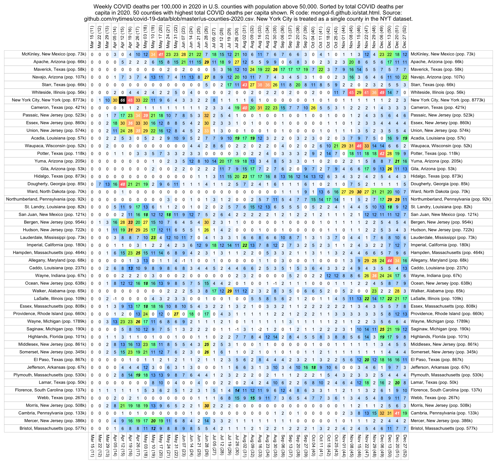
You can download the all-cause mortality data from CDC WONDER: https://wonder.cdc.gov/mcd-icd10-provisional.html. Click the "I Agree" button, in section 1 set "Group Results By" to "Residence County" and set "And By" to "Month". In section 2, select the first 30 states from the list of residence states, because otherwise there's an error that the number of rows returned is too high. In section 8, check "Export Results", increase the timeout to 15 minutes, and click "Send". And then repeat the procedure for the rest of the states. CDC WONDER omits the number of deaths for counties with less than 10 deaths during a month.
library(ggplot2)
library(usmap)
t=do.call(rbind,Sys.glob("Provisional Mortality Statistics*")|>lapply(\(x){t=readLines(x);t=paste(t[1:(which(t=="\"---\"")[1]-1)],collapse="\n");read.table(sep="\t",text=t,header=T)}))
t$fips=t$Residence.County.Code
t$date=as.Date(paste0(t$Month.Code,"/1"),"%Y/%m/%d")
t$prediction=t$date<as.Date("2020-1-1")
t=t[t$date<=as.Date("2020-12-1"),]
ta=table(t$fips)
t=t[t$fips%in%names(ta[ta==max(ta)]),]
t$model=split(t,factor(t$fips,unique(t$fips)))|>lapply(\(x){model=predict(lm(Deaths~date,x[x$prediction,]),x);month=substring(x$date,6,7);model+tapply((x$Deaths-model)[x$prediction],month[x$prediction],mean)[month]})|>unlist()
t$excess=100*(t$Deaths-t$model)/t$model
## for(date in seq(as.Date("2020-1-1"),as.Date("2020-12-1"),"1 month")){
date=as.Date("2020-4-1")
t2=t[t$date==date,]
brk=seq(-50,300,50)
d=data.frame(fips=t2$fips,values=factor(brk[sapply(t2$excess,\(x)which.min(abs(x-brk)))],brk))
color=c(hcl(225,45,90),"white",hcl(15,c(50,70,90,110,130,0),c(90,75,60,40,20,0)))
nacol="gray92"
seg=\(x,y)min(x,na.rm=T)+y*(max(x,na.rm=T)-min(x,na.rm=T))
map=us_map()
label=c("Not available",paste0("Closest to ",brk,"%"))
ystep=.033
legx=seg(map$x,.94)
legy=seg(map$y,seq(.44,,-ystep,length(label)))
legend=data.frame(x=legx,y=legy,label)
half=(max(map$y)-min(map$y))*ystep/2
rect=data.frame(xmin=legx-2.75*half,xmax=legx-.75*half,ymin=legy-half,ymax=legy+half)
plot_usmap(data=d,linewidth=.04,color="gray70")+
geom_text(data=legend,aes(x=x,y=y,label=label),size=2.2,hjust=0)+
geom_rect(data=rect,aes(xmin=xmin,xmax=xmax,ymin=ymin,ymax=ymax),fill=c(nacol,color)[1:nrow(legend)],color="gray70",linewidth=.1)+
annotate("text",x=seg(map$x,.39),y=seg(map$y,.96),label=paste0("Excess death percent: ",format(as.Date(date),"%B %Y")),hjust=0,size=2.8)+
annotate("text",x=seg(map$x,.45),y=seg(map$y,.05),label="Source: wonder.cdc.gov/mcd-icd10-provisional.html. Counties with less than\n10 deaths during any month in 2018-2020 omitted.",hjust=0,size=2.1)+
geom_polygon(data=usmapdata::us_map(regions="states"),aes(x,y,group=group),fill=NA,linewidth=.05,color="gray45")+
scale_x_continuous(expand=expansion(c(.0,.3)))+
scale_fill_manual(breaks=brk,values=color,na.value=nacol)+
theme(
legend.position="none",
panel.background=element_rect(color=NA,fill="white"),
plot.background=element_rect(color=NA,fill="white")
)
## f=paste0(date,".png")
f="1.png"
ggsave(f,width=6,height=6)
system(paste("mogrify -gravity center -trim -border 16 -bordercolor white",f))
## }
## system("for x in *.png;do convert $x ${x%png}bmp;done;convert -fuzz 1% -layers optimize -delay 100 *.bmp a.gif;qlmanage -p a.gif")

# install.packages("BiocManager")
# BiocManager::install("ComplexHeatmap")
# install.packages("circlize"
# install.packages("colorspace")
library(ComplexHeatmap)
library(circlize) # for colorRamp2
library(colorspace)
# https://healthdata.gov/dataset/COVID-19-Diagnostic-Laboratory-Testing-PCR-Testing/j8mb-icvb/about_data
download.file("https://healthdata.gov/api/views/j8mb-icvb/rows.csv","statespcr.csv") # https://healthdata.gov/dataset/COVID-19-Diagnostic-Laboratory-Testing-PCR-Testing/j8mb-icvb
t=read.csv("statespcr.csv")
pos=t[t$overall_outcome=="Positive",]
ag1=aggregate(t$new_results_reported,list(state=t$state_name,month=substr(t$date,1,7)),sum)
ag2=aggregate(pos$new_results_reported,list(state=pos$state_name,month=substr(pos$date,1,7)),sum)
me=merge(ag1,ag2,by=c(1,2),all=T)
me[3][me[3]<10]=NA
me$pct=100*me[,4]/me[,3]
me$pct[me$pct>50]=NA
wide=\(x,row=1,col=2,val=3,default=NA){c1=as.character(x[,row]);c2=as.character(x[,col]);u1=unique(c1);u2=unique(c2);o=matrix(default,length(u1),length(u2),,list(u1,u2));o[cbind(c1,c2)]=x[,val];o}
m=wide(me,1,2,5)
disp=round(m)
m=m^.8
rowmax=t(apply(m,1,\(x)x==max(x,na.rm=T)))
rowmax[is.na(rowmax)]=F
png("1.png",w=ncol(m)*30+1000,h=nrow(m)*30+1000,res=72)
ht_opt$COLUMN_ANNO_PADDING=unit(0,"mm")
ht_opt$ROW_ANNO_PADDING=unit(0,"mm")
maxcolor=max(m,na.rm=T)
m2=replace(m,is.na(m),0)
hc=as.hclust(reorder(as.dendrogram(hclust(dist(m2))),prcomp(m2)$x[,1]))
Heatmap(
m,
show_heatmap_legend=F,
show_column_names=F,
show_row_names=F,
width=unit(ncol(m)*30,"pt"),
height=unit(nrow(m)*30,"pt"),
cluster_columns=F,
cluster_rows=hc,
row_dend_width=unit(200,"pt"),
column_title=stringr::str_wrap(paste0("PCR positivity rate by state, CDC dataset \"COVID-19 Diagnostic Laboratory Testing (PCR Testing) Time Series\". Months with less than 10 tests omitted. Months with over 50% positivity are omitted, because in 2023 some states some states only began to report positive results, or limited testing produced very high positivity rates that are not indicative of the actual prevalence of COVID."),190),
column_title_gp=gpar(fontsize=22),
rect_gp=gpar(col="gray80",lwd=0),
top_annotation=columnAnnotation(text=anno_text(gt_render(colnames(m),padding=unit(c(3,3,3,3),"mm")),just="left",rot=90,location=unit(0,"npc"),gp=gpar(fontsize=17,border="gray70",lwd=1))),
bottom_annotation=columnAnnotation(text=anno_text(gt_render(colnames(m),padding=unit(c(3,3,3,3),"mm")),just="left",rot=270,gp=gpar(fontsize=17,border="gray70",lwd=1))),
left_annotation=rowAnnotation(text=anno_text(gt_render(rownames(m),padding=unit(c(3,3,3,3),"mm")),just="right",location=unit(1,"npc"),gp=gpar(fontsize=17,border="gray70",lwd=1))),
right_annotation=rowAnnotation(text=anno_text(gt_render(rownames(m),padding=unit(c(3,3,3,3),"mm")),just="left",location=unit(0,"npc"),gp=gpar(fontsize=17,border="gray70",lwd=1))),
col=colorRamp2(seq(0,maxcolor,,16),hex(HSV(c(210,210,210,210,150,100,60,45,30,15,0,0,0,0,0,0),c(0,.166,.333,rep(.5,9),.7,.9,1,1),c(rep(1,12),.75,.5,.25,0)))),
cell_fun=\(j,i,x,y,w,h,fill)grid.text(disp[i,j],x,y,gp=gpar(fontface=ifelse(rowmax[i,j],4,"plain"),fontsize=16,col=ifelse(abs(m[i,j])>=maxcolor*.75,"white","black")))
)
dev.off()
system("mogrify -gravity center -trim -border 16 -bordercolor white 1.png")
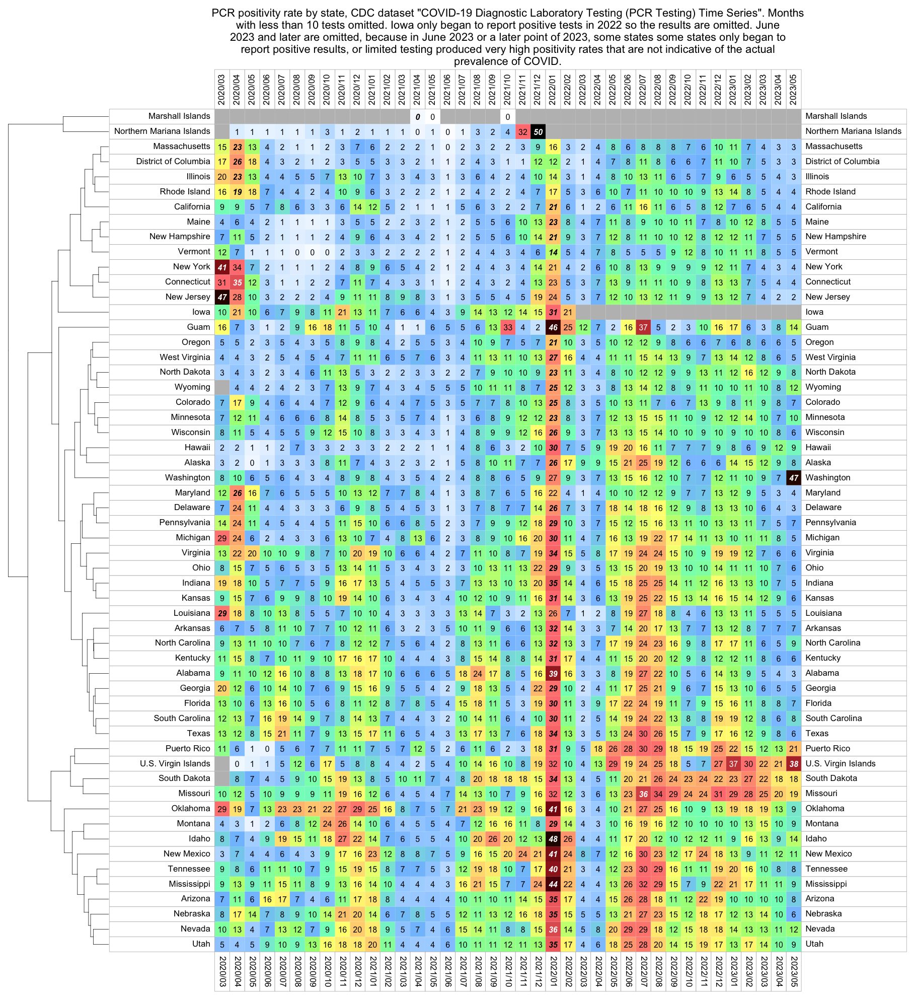
u=https://www2.census.gov/programs-surveys/popest/datasets
parallel -j20 curl -s ::: $u/2020-2022/national/asrh/nc-est2022-alldata-r-file0{1..8}.csv|awk 'NR==1||!/UNIVERSE/'>new
parallel -j20 curl -s ::: $u/2010-2020/national/asrh/NC-EST2020-ALLDATA-R-File{01..24}.csv|awk 'NR==1||!/UNIVERSE/' >old
sed 1d old|cut -d, -f2-5|awk -F, '$2!=2021&&($2!=2020||$1<4)'|cat - <(sed 1d new|cut -d, -f2-5)|awk -F, '$3!=999&&$1!~/4\.[12]/{print$3 FS$2 FS$1 FS$4}'|sort -t, -nk1,1 -nk2,2 -nk3,3|sed s/X//|(echo age,year,month,pop;cat)>usmonthpop.csv
The methodology article by the Census Bureau says: "We then divide these estimates into the following universes: household (HH), civilian (CIV), civilian noninstitutionalized (CNI), and resident plus Armed Forces overseas (RES+AFO)." [https://www2.census.gov/programs-surveys/popest/technical-documentation/methodology/2020-2022/methods-statement-v2022.pdf] In the filenames of the CSV files, I believe R is resident, C is civilian, H is household, N is noninstitutionalized, and P is RES+AFO.
Download data from: https://data.cdc.gov/Vaccinations/COVID-19-Vaccination-Age-and-Sex-Trends-in-the-Uni/5i5k-6cmh.
# install.packages("BiocManager")
# BiocManager::install("ComplexHeatmap")
# install.packages("circlize"
# install.packages("colorspace")
library(ComplexHeatmap)
library(colorspace)
library(circlize)
vax=data.table::fread("COVID-19_Vaccination_Age_and_Sex_Trends_in_the_United_States__National_and_Jurisdictional_20240131.csv")
vax=vax[Demographic_Category%in%c("Female_Ages_18-24_yrs","Female_Ages_25-49_yrs")]
dim=list(date=sub("(..)/../(....).*","\\2-\\1",vax$Date),state=vax$Location)
ag=aggregate(list(vax=vax$Administered_Dose1,pop=vax$census),dim,sum)
m=tapply(ag$vax/ag$pop*100,ag[,2:1],c)
states=read.csv("https://github.com/cphalpert/census-regions/raw/master/us%20census%20bureau%20regions%20and%20divisions.csv")
states=rbind(states,data.frame(State=c("United States","District of Columbia","American Samoa","Guam","Northern Mariana Islands","Puerto Rico","Virgin Islands","FS of Micronesia","Marshall Islands","Palau"),State.Code=c("US","DC","AS","GU","MP","PR","VI","FM","MH","PW"),Region=NA,Division=c("Total",rep("Other",9))))
states$order=match(states$Division,strsplit("Total,New England,Middle Atlantic,East North Central,West North Central,South Atlantic,East South Central,West South Central,Mountain,Pacific,Other",",")[[1]])
states$Division=sub("([WE]).* (South Central)","\\1 \\2",states$Division)
m=m[order(states$ord[match(rownames(m),states$State.Code)]),]
m=m[,-1]
rownames(m)=states$State[match(rownames(m),states$State.Code)]
png("0.png",w=ncol(m)*30+1000,h=nrow(m)*30+1000,res=72)
ht_opt$COLUMN_ANNO_PADDING=unit(0,"mm")
ht_opt$ROW_ANNO_PADDING=unit(0,"mm")
split=states$Division[match(rownames(m),states$State)]
Heatmap(m,
column_split=substring(colnames(m),1,4),
row_split=factor(split,unique(split)),
column_title=NULL,
row_title_gp=gpar(fontsize=16),
column_gap=unit(4,"mm"),
row_gap=unit(4,"mm"),
border="gray60",
width=unit(ncol(m)*30,"pt"),
height=unit(nrow(m)*30,"pt"),
show_column_names=F,
show_row_names=F,
cluster_columns=F,
cluster_rows=F,
show_heatmap_legend=F,
rect_gp=gpar(col="gray80",lwd=0),
top_annotation=columnAnnotation(text=anno_text(gt_render(colnames(m),padding=unit(c(3,3,3,3),"mm")),just="left",rot=90,location=unit(0,"npc"),gp=gpar(fontsize=17,border="gray60",lwd=1))),
bottom_annotation=columnAnnotation(text=anno_text(gt_render(colnames(m),padding=unit(c(3,3,3,3),"mm")),just="left",rot=270,gp=gpar(fontsize=17,border="gray60",lwd=1))),
left_annotation=rowAnnotation(text=anno_text(gt_render(rownames(m),padding=unit(c(3,3,3,3),"mm")),just="right",location=unit(1,"npc"),gp=gpar(fontsize=17,border="gray60",lwd=1))),
right_annotation=rowAnnotation(text=anno_text(gt_render(rownames(m),padding=unit(c(3,3,3,3),"mm")),just="left",location=unit(0,"npc"),gp=gpar(fontsize=17,border="gray60",lwd=1))),
col=colorRamp2(seq(0,100,,256),lapply(seq(1,0,,256),(\(x)rgb(x,x,x))),
cell_fun=\(j,i,x,y,w,h,fill)grid.text(round(m[i,j]),x,y,gp=gpar(fontsize=16,col=ifelse(m[i,j]>45,"white","black"))))
dev.off()
system("mogrify -trim 0.png;convert 0.png -gravity northwest -splice x10 -size `identify -format %w 0.png`x -pointsize 25 caption:'Percentage of vaccinated women in ages 18-49 (number of vaccinated people divided by census population estimate). Many months have over 100% vaccinated people, which might be because of people who are missing from the census population estimates, or if some people who were vaccinated in multiple states were counted multiple times. Source: CDC dataset titled \"COVID-19 Vaccination Age and Sex Trends in the United States, National and Jurisdictional\".' +swap -append -trim -bordercolor white -border 24 +repage 1.png")

library(ggplot2)
t=read.csv("s/f/ons-table-1-2023-august.csv",na.strings=c("x","<3"))
t=t[t$cause=="All causes",]
xy=data.frame(x=as.Date(paste0(t$year,"-",match(t$month,month.name),"-1")),y=t$asmr,pop=t$pop)
xy$z=factor(t$status,unique(t$status))
xy$frac=xy$pop/with(subset(xy,xy$z!="Ever vaccinated"),tapply(pop,x,sum))[as.character(xy$x)]
xy$frac[xy$z=="Ever vaccinated"]=0
ystart=0;yend=7000;xstart=min(xy$x);xend=max(xy$x)
pal=c(hcl(c(210,110,110,60,60,60,0,0,310,310)+15,c(90,90,70,90,70,60,90,70,90,70),c(70,70,50,70,50,30,70,50,70,50)),"black")
ggplot(xy,aes(x=x,y=y,color=z))+
geom_area(aes(y=frac*yend*.9999,fill=z),linewidth=.1,show.legend=F,alpha=.3)+
geom_hline(yintercept=c(ystart,yend),linewidth=.3,lineend="square")+
geom_vline(xintercept=c(xstart,xend),linewidth=.3,lineend="square")+
geom_line(linewidth=.3)+
geom_point(size=.7)+
# geom_text(label=round(xy$y),size=2,vjust=-.7,show.legend=F)+
scale_x_date(breaks=unique(xy$x),expand=expansion(0),date_labels="%b\n%y")+
scale_y_continuous(limits=c(ystart,yend),breaks=seq(0,yend,1000),expand=expansion(0),labels=\(i)ifelse(i<1000,i,paste0(round(i/1e3),"k")),sec.axis=sec_axis(trans=~./yend*100,name="Percentage of group"))+
coord_cartesian(clip="off")+
labs(x=NULL,y="Age-standardized mortality rate per 100,000 person-years")+
ggtitle("All-cause age-standardized mortality rate in England",subtitle="Data from ons.gov.uk/peoplepopulationandcommunity/birthsdeathsandmarriages/deaths/datasets/deathsbyvaccinationstatusengland")+
scale_color_manual(values=pal)+
scale_fill_manual(values=pal)+
guides(color=guide_legend(ncol=3))+
theme(axis.text=element_text(size=6,color="black"),
axis.ticks=element_line(linewidth=.3),
axis.ticks.length=unit(.2,"lines"),
axis.title=element_text(size=7.5),
legend.background=element_blank(),
legend.box.just="center",
legend.direction="vertical",
legend.key=element_rect(fill="white"),
legend.spacing.x=unit(.15,"lines"),
legend.key.size=unit(.8,"lines"),
legend.justification="center",
legend.margin=margin(-.9,0,-.2,0,"lines"),
legend.position="bottom",
legend.text=element_text(size=5.85,vjust=.5),
legend.title=element_blank(),
panel.background=element_rect(fill="white"),
panel.grid=element_blank(),
plot.subtitle=element_text(size=6,margin=margin(0,0,.6,0,"lines")),
plot.title=element_text(size=9,margin=margin(.1,0,.4,0,"lines")))
ggsave("1.png",width=5.6,height=4,dpi=400)
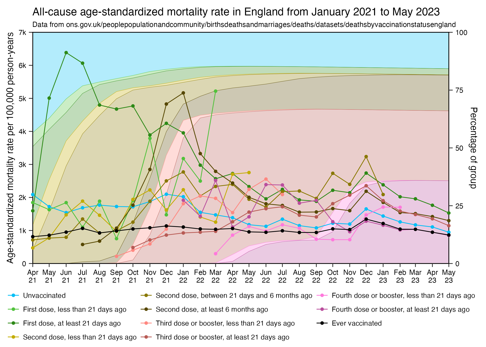
In Table 2 of the spreadsheet published by the ONS which shows ASMR by age group, for some reason there is no "ever vaccinated" group included but only individual vaccination status groups. However you can still calculate a total crude mortality rate within all vaccinated people by summing together the deaths and person-years in individual vaccination status groups:
t=read.csv("http://sars2.net/f/ons-table-2-2023-august.csv",na.strings=c("x","<3"))
d=data.frame(age=t$age,month=sprintf("%d-%02d",t$year,match(t$month,month.name)),status=t$status!="Unvaccinated",dead=t$dead,pop=t$pop)
d=rbind(d,cbind(aggregate(d[,4:5],d[,c(1,3)],sum,na.rm=T),month="Total"))
dead=tapply(d$dead,d[,1:3],sum,na.rm=T)
pop=tapply(d$pop,d[,1:3],sum,na.rm=T)
vax=(dead[,,1]/pop[,,1])
unvax=(dead[,,2]/pop[,,2])
m=(unvax-vax)/ifelse(unvax>vax,vax,unvax)*100
disp=round(m)
maxcolor=max(abs(m))
library(colorspace)
pheatmap::pheatmap(m,filename="0.png",display_numbers=disp,
cluster_rows=F,cluster_cols=F,legend=F,cellwidth=19,cellheight=19,fontsize=9,fontsize_number=8,
border_color=NA,na_col="white",
number_color=ifelse((abs(m)>.55*maxcolor)&!is.na(m),"white","black"),
breaks=seq(-maxcolor,maxcolor,,256),
colorRampPalette(hex(HSV(c(210,210,210,210,0,0,0,0,0),c(1,.8,.6,.3,0,.3,.6,.8,1),c(.3,.65,1,1,1,1,1,.65,.3))))(256))
system("w=`identify -format %w 0.png`;convert 0.png -gravity northwest -shave x10 \\( -size $[$w-40]x -pointsize 40 caption:'ONS data for mortality by vaccination status in England: crude mortality rate in ever vaccinated and unvaccinated people (150 means that vaccinated people have 150% higher CMR and -50% means that unvaccinated people have 50% higher CMR)' -extent $[w-40]x -gravity center \\) +swap -append -trim -bordercolor white -border 24 +repage 1.png")
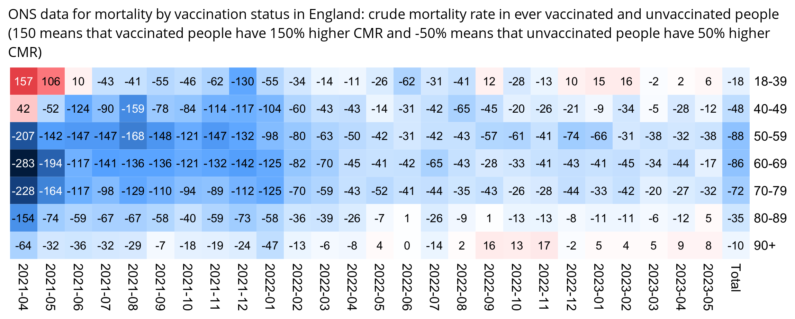
# install.packages("BiocManager")
# BiocManager::install("ComplexHeatmap")
# install.packages("circlize")
# install.packages("colorspace")
library(ComplexHeatmap)
library(circlize)
library(colorspace)
# system("wget -Umozilla --content-disposition https://www.ons.gov.uk/file?uri=/peoplepopulationandcommunity/birthsdeathsandmarriages/deaths/adhocs/1491dailydeathsbydateofoccurrence1june2014to31july2023bysingleyearofageenglandandwales/dailydeaths20142023.xlsx")
t=as.data.frame(readxl::read_excel("dailydeaths20142023.xlsx",sheet=4,range="A6:CP3354"))
mav=\(x,y){l=length(x);s=e=y%/%2;if(y%%2==0)s=s-1;setNames(sapply(1:l,\(i)mean(x[max(1,i-s):min(l,i+e)],na.rm=T)),names(x))}
starts=seq(0,90,10)
m=sapply(starts,\(i){
t3=data.frame(x=as.double(as.Date(paste0(t$Year,"-",t$Month,"-",t$Day))),y=rowSums(t[,(i+3):min(i+12,ncol(t)),drop=F]))
t3$mav=mav(t3$y,3)
past=t3[,1]>=as.Date("2015-1-1")&t3[,1]<as.Date("2020-1-1")
linear=predict(lm(mav~x,t3[past,]),t3)
days=sub("^.....","",as.Date(t3$x,"1970-1-1"))
daily=tapply((t3$y-linear)[past],days[past],mean)
excess=100*(t3$y-linear-daily[days])/linear
# tapply(excess,sub("...$","",as.Date(t3$x,"1970-1-1")),mean) # display monthly instead of weekly data
tapply(excess,format(as.Date(t3$x,"1970-1-1"),"%G-%V"),mean)
})
colnames(m)=paste0(starts,"-",starts+9)
colnames(m)[ncol(m)]="90+"
m=t(m[rownames(m)>="2020"&rownames(m)<"2022",])
rowmax=apply(m,1,\(x)x==max(x))
png("1.png",w=ncol(m)*30+1000,h=nrow(m)*30+1000,res=72)
ht_opt$COLUMN_ANNO_PADDING=unit(0,"mm")
ht_opt$ROW_ANNO_PADDING=unit(0,"mm")
maxcolor=max(m)
Heatmap(
m,
show_heatmap_legend=F,
show_column_names=F,
show_row_names=F,
width=unit(ncol(m)*30,"pt"),
height=unit(nrow(m)*30,"pt"),
row_dend_width=unit(200,"pt"),
clustering_distance_rows="euclidean",
cluster_columns=F,
cluster_rows=F,
column_title=stringr::str_wrap("Weekly percentage of excess deaths by date of occurrence for 10-year age groups in England and Wales. Excess percent is based on 2015-2019 linear trend with average difference from linear trend on each 366 days of the year in 2015-2019 added to the corresponding day for subsequent years (using a 15-day moving average of daily data). The data is based on number of deaths only and not divided by the size of the age groups. ISO 8601 week numbers used. Source: https://www.ons.gov.uk/peoplepopulationandcommunity/birthsdeathsandmarriages/deaths/adhocs/1491dailydeathsbydateofoccurrence1june2014to31july2023bysingleyearofageenglandandwales.",220),
column_title_gp=gpar(fontsize=23),
rect_gp=gpar(col="gray80",lwd=0),
top_annotation=columnAnnotation(text=anno_text(gt_render(colnames(m),padding=unit(c(3,3,3,3),"mm")),just="left",rot=90,location=unit(0,"npc"),gp=gpar(fontsize=17,border="gray70",lwd=1))),
bottom_annotation=columnAnnotation(text=anno_text(gt_render(colnames(m),padding=unit(c(3,3,3,3),"mm")),just="left",rot=270,gp=gpar(fontsize=17,border="gray70",lwd=1))),
left_annotation=rowAnnotation(text=anno_text(gt_render(rownames(m),padding=unit(c(3,3,3,3),"mm")),just="right",location=unit(1,"npc"),gp=gpar(fontsize=17,border="gray70",lwd=1))),
right_annotation=rowAnnotation(text=anno_text(gt_render(rownames(m),padding=unit(c(3,3,3,3),"mm")),just="left",location=unit(0,"npc"),gp=gpar(fontsize=17,border="gray70",lwd=1))),
col=colorRamp2(seq(-maxcolor,maxcolor,,9),hex(HSV(c(210,210,210,210,0,0,0,0,0),c(.7,.7,.6,.3,0,.3,.6,.7,.7),c(.3,.65,1,1,1,1,1,.65,.3)))),
cell_fun=\(j,i,x,y,w,h,fill)grid.text(sprintf("%.0f",m[i,j]),x,y,gp=gpar(fontface=ifelse(rowmax[j,i],4,"plain"),fontsize=16,col=ifelse(abs(m[i,j])>=maxcolor*.5,"white","black")))
)
dev.off()
system("mogrify -gravity center -trim -border 16 -bordercolor white 1.png")
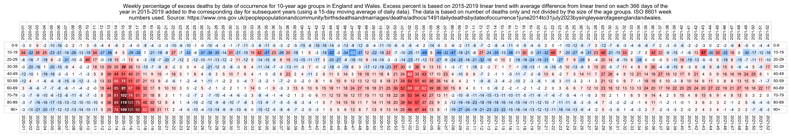
In December 2022 when ASMR peaked in triple-jabbed people, there were about 16 times as many people with 4 doses than 3 doses in the age groups 80-89 and 90+:
> t=read.csv("https://sars2.net/f/ons-table-2-2023-august.csv",na.strings=c("x","<3"))
> t=t[t$cause=="All causes"&t$month=="December"&t$year==2022,]
> t3=t[grepl("Third",t$status),]
> t4=t[grepl("Fourth",t$status),]
> tapply(t4$pop,t4[,4],sum)/tapply(t3$pop,t3[,4],sum)
18-39 40-49 50-59 60-69 70-79 80-89 90+
0.1355542 0.2381953 1.5760131 3.5165494 9.5796245 15.7584568 15.7678801
People aged 80-89 make up 4% of the 2013 European Standard Population. But in the group "Third dose or booster, at least 21 days ago" in December 2022, people aged 80-89 accounted for only about 0.9% of total person-years, but they are still given 4% weight when calculating the ASMR value, so they are overrepresented by a factor of about 4.6 in the ASMR figure relative to their population size:
> t=read.csv("https://sars2.net/f/ons-table-2-2023-august.csv",na.strings=c("x","<3"))
> t=t[t$cause=="All causes"&t$month=="December"&t$year==2022&t$status=="Third dose or booster, at least 21 days ago",]
> print.data.frame(data.frame(age=t$age,pop_pct=round(100*t$pop/sum(t$pop),1)),row.names=F)
age pop_pct
18-39 44.5
40-49 26.5
50-59 16.4
60-69 8.4
70-79 3.0
80-89 0.9
90+ 0.2
The following code calculates a similar overrepresentation factor for each age and vaccination status group:
# install.packages("BiocManager")
# BiocManager::install("ComplexHeatmap")
# install.packages("circlize"
# install.packages("colorspace")
library(ComplexHeatmap)
library(colorspace)
library(circlize)
esp=setNames(c(27700,14000,13500,11500,9000,4000,1000),c("18-39","40-49","50-59","60-69","70-79","80-89","90+"))
t=read.csv("https://sars2.net/f/ons-table-2-2023-august.csv",na.strings=c("x","<3"))
t=t[t$cause=="All causes",]
d2=data.frame(date=paste0(t$year,sprintf("-%02d",match(t$month,month.name))),age=t$age,status=t$status,pop=t$pop)
sums=aggregate(d2$pop,list(d2$date,d2$status),sum)|>`colnames<-`(c("date","status","sum"))
d3=merge(d2,sums)
d3$ratio=ifelse(d3$pop==0,NA,(esp[d3$age]/1e5)/(d3$pop/d3$sum))
d3=d3[order(match(d3$status,unique(t$status)),d3$age),]
l2w=\(x,row=1,col=2,val=3,default=NA){c1=as.character(x[,row]);c2=as.character(x[,col]);u1=unique(c1);u2=unique(c2);o=matrix(default,length(u1),length(u2),,list(u1,u2));o[cbind(c1,c2)]=x[,val];o}
m=l2w(data.frame(paste0(d3$status,": ",d3$age),d3$date,d3$ratio))
under=m<1&!is.na(m)
m[under]=-1/m[under]
cellwidth=30
cellheight=30
png("1.png",w=ncol(m)*cellwidth+1000,h=nrow(m)*cellheight+1000,res=72)
ht_opt$COLUMN_ANNO_PADDING=unit(0,"mm")
ht_opt$ROW_ANNO_PADDING=unit(0,"mm")
disp=sprintf(ifelse(abs(m)>=10,"%.0f","%.1f"),m)|>matrix(nrow(m))
m=m-sign(m)
m=ifelse(m<0,-1,1)*abs(m)^.5
maxcolor=max(m,na.rm=T)
Heatmap(
m,
row_split=factor(sub(":.*","",rownames(m)),unique(t$Vaccination.status)),
gap=unit(4,"mm"),
row_title=NULL,
show_heatmap_legend=F,
show_column_names=F,
show_row_names=F,
width=unit(ncol(m)*cellwidth,"pt"),
height=unit(nrow(m)*cellheight,"pt"),
row_dend_width=unit(200,"pt"),
cluster_columns=F,
cluster_rows=F,
na_col="white",
column_title=stringr::str_wrap("English mortality statistics by vaccination status: factor by which an age group is overrepresented in ASMR value relative to its share of person-years. The AMSR figures are calculated based on the 2013 European Standard Population, where for example the age group 80-89 is always given 4% weight because it makes up 4% of ESP2013. But in the group \"Third dose or booster, at least 21 days ago\" in December 2022, the age group 80-89 made up about 1.2% of total person years so it was overrepresented by a factor of about 4.4 in the ASMR figure. A negative value means that an age group is underrepresented. An empty square indicates that there were zero people in the group. The reason why people with three doses have had high ASMR in 2023 might be because of the healthy vaccinee effect, because in 2023 the age groups 80-89 and 90+ have contained about 15-17 times as many people with 4 doses as 3 doses, and people with only three doses in elderly age groups consist of a small number of \"stragglers\" who have a disproportionate effect on the ASMR figures. R code: sars2.net/stat.html.",130),
column_title_gp=gpar(fontsize=26),
rect_gp=gpar(col="gray80",lwd=0),
top_annotation=columnAnnotation(text=anno_text(gt_render(colnames(m),padding=unit(c(3,3,3,3),"mm")),just="left",rot=90,location=unit(0,"npc"),gp=gpar(fontsize=17,border="gray70",lwd=1))),
bottom_annotation=columnAnnotation(text=anno_text(gt_render(colnames(m),padding=unit(c(3,3,3,3),"mm")),just="left",rot=270,gp=gpar(fontsize=17,border="gray70",lwd=1))),
left_annotation=rowAnnotation(text=anno_text(gt_render(rownames(m),padding=unit(c(3,3,3,3),"mm")),just="right",location=unit(1,"npc"),gp=gpar(fontsize=17,border="gray70",lwd=1))),
right_annotation=rowAnnotation(text=anno_text(gt_render(rownames(m),padding=unit(c(3,3,3,3),"mm")),just="left",location=unit(0,"npc"),gp=gpar(fontsize=17,border="gray70",lwd=1))),
col=colorRamp2(seq(-maxcolor,maxcolor,,9),hex(HSV(c(210,210,210,210,0,0,0,0,0),c(.7,.7,.6,.3,0,.3,.6,.7,.7),c(.3,.65,1,1,1,1,1,.65,.3)))),
cell_fun=\(j,i,x,y,w,h,fill)grid.text(disp[i,j],x,y,gp=gpar(fontsize=16,col=ifelse(abs(m[i,j])>=maxcolor*.5,"white","black")))
)
dev.off()
system("mogrify -gravity center -trim -border 16 -bordercolor white 1.png")
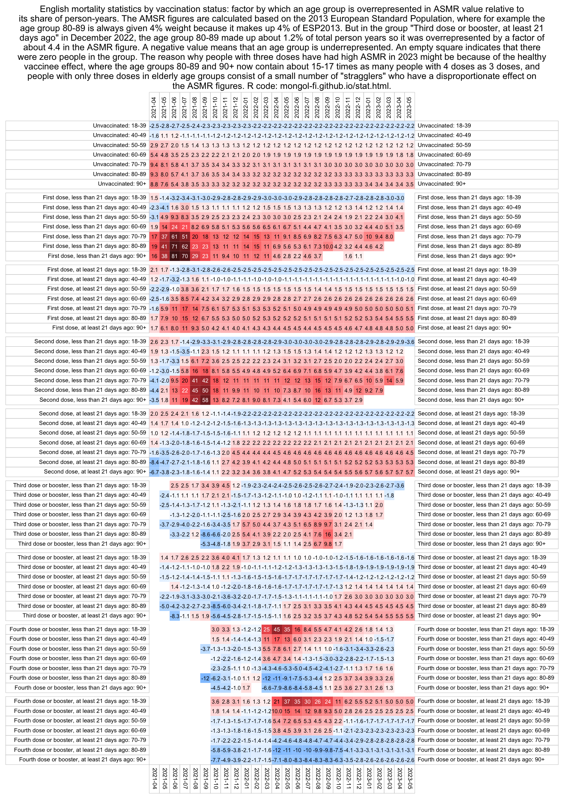
library(ggplot2);library(colorspace)
download.file("https://www.ons.gov.uk/file?uri=/peoplepopulationandcommunity/birthsdeathsandmarriages/deaths/adhocs/1343dailydeathsbydateofoccurrence1stjune2014to31stmay2023bysingleyearofageengland/dailydeaths2014to2023england.xlsx","dailydeaths2014to2023england.xlsx")
death=as.data.frame(readxl::read_excel("dailydeaths2014to2023england.xlsx",sheet=4,range="A6:CP3293"))
date=as.Date(paste0(death$Year,"-",death$Month,"-",death$Day))
death=death[,-c(1:3)]
pop=read.csv("https://sars2.net/f/englandpop.csv",row.names=1)
pop=apply(pop,2,\(x)predict(smooth.spline(data.frame(x=as.numeric(as.Date(paste0(rownames(pop),"-7-1"))),y=x)),as.numeric(date))$y)|>"rownames<-"(as.character(date))
ranges=data.frame(start=c(18,40,50,60,70,80,90))
ranges$end=c(ranges$start[-1]-1,90)
death2=apply(ranges,1,\(x)rowSums(death[,(x[1]:x[2])+1,drop=F]))
pop2=apply(ranges,1,\(x)rowSums(pop[,(x[1]:x[2])+1,drop=F]))
months=substr(date,1,7)
rowmean=\(x,y)t(sapply(split.data.frame(x,y),colMeans))
cmr=rowsum(death2,months)/rowmean(pop2,months)*365e5/lubridate::days_in_month(paste0(unique(months),"-1"))
colnames(cmr)=c(head(apply(ranges,1,paste,collapse="-"),-1),"90+")
m1=t(tail(cmr,20))
t=read.csv("https://sars2.net/f/ons-table-2-2023-august.csv",na.strings=c("x","<3"))
t=t[t$cause=="All causes",]
t2=data.frame(age=t$age,date=sprintf("%d-%02d",t$year,match(t$month,month.name)),status=t$status,pop=t$pop,cmr=t$dead/t$pop*1e5)
t2=t2[t2$date>="2021-10",]
m2=with(subset(t2,status=="Third dose or booster, at least 21 days ago"),tapply(cmr,list(age,date),c))
m3=with(subset(t2,status=="Fourth dose or booster, at least 21 days ago"),tapply(cmr,list(age,date),c))
m2=(m2/m1-1)*100
m3=(m3/m1-1)*100
disp2=round(m2)
disp3=round(m3)
maxcolor=400
pal=colorRampPalette(hex(HSV(c(210,210,210,210,0,0,0,0,0),c(1,.8,.6,.3,0,.3,.6,.8,1),c(.3,.65,1,1,1,1,1,.65,.3))))(256)
pheatmap::pheatmap(m2,filename="i2.png",display_numbers=disp2,
cluster_rows=F,cluster_cols=F,legend=F,cellwidth=19,cellheight=19,fontsize=9,fontsize_number=8,
border_color=NA,na_col="gray90",number_color=ifelse(abs(m2)>maxcolor*.6,"white","black"),
breaks=seq(-maxcolor,maxcolor,,256),pal)
pheatmap::pheatmap(m3,filename="i3.png",display_numbers=disp3,
cluster_rows=F,cluster_cols=F,legend=F,cellwidth=19,cellheight=19,fontsize=9,fontsize_number=8,
border_color=NA,na_col="gray90",number_color=ifelse(abs(m3)>maxcolor*.6,"white","black"),
breaks=seq(-maxcolor,maxcolor,,256),pal)
system("w=`identify -format %w i2.png`;convert i2.png -gravity northwest \\( -splice x16 -size $[w-44]x -pointsize 35 caption:'3rd dose or booster, at least 21 days ago: Excess mortality percent relative to total population of England' -extent $[w-44]x -gravity center \\) +swap -append -bordercolor white -border 6 +repage l2.png")
system("w=`identify -format %w i3.png`;convert i3.png -gravity northwest \\( -splice x16 -size $[w-44]x -pointsize 35 caption:'4th dose or booster, at least 21 days ago: Excess mortality percent relative to total population of England' -extent $[w-44]x -gravity center \\) +swap -append -bordercolor white -border 6 +repage l3.png")
system("montage -geometry +0+0 -tile 1x l[23].png 1.png")
pop2=with(subset(t2,status=="Third dose or booster, at least 21 days ago"),tapply(pop,list(age,date),c))
pop3=with(subset(t2,status=="Fourth dose or booster, at least 21 days ago"),tapply(pop,list(age,date),c))
kimi=\(x){e=floor(log10(ifelse(x==0,1,abs(x))));e2=pmax(e,0)%/%3+1;p=!is.na(x);x[p]=paste0(sprintf(paste0("%.",ifelse(e[p]%%3==0,1,0),"f"),x[p]/1e3^(e2[p]-1)),c("","k","M","B","T")[e2[p]]);x}
disp2=ifelse(pop2<10,pop2,kimi(pop2))
disp3=ifelse(pop3<10,pop3,kimi(pop3))
maxcolor=max(pop2,pop3)
pal=sapply(seq(1,0,,256),\(i)rgb(i,i,i))
pheatmap::pheatmap(pop2,filename="p2.png",display_numbers=disp2,
cluster_rows=F,cluster_cols=F,legend=F,cellwidth=19,cellheight=19,fontsize=9,fontsize_number=8,
border_color=NA,na_col="white",number_color=ifelse(pop2>maxcolor*.45,"white","black"),
breaks=seq(0,maxcolor,,256),pal)
pheatmap::pheatmap(pop3,filename="p3.png",display_numbers=disp3,
cluster_rows=F,cluster_cols=F,legend=F,cellwidth=19,cellheight=19,fontsize=9,fontsize_number=8,
border_color=NA,na_col="white",number_color=ifelse(pop3>maxcolor*.45,"white","black"),
breaks=seq(0,maxcolor,,256),pal)
system("w=`identify -format %w p2.png`;convert p2.png -gravity northwest \\( -splice x16 -size $[w-44]x -pointsize 35 caption:'3rd dose or booster, at least 21 days ago: Population size in person-years' -extent $[w-44]x -gravity center \\) +swap -append -bordercolor white -border 6 +repage l2.png")
system("w=`identify -format %w p3.png`;convert p3.png -gravity northwest \\( -splice x16 -size $[w-44]x -pointsize 35 caption:'4th dose or booster, at least 21 days ago: Population size in person-years' -extent $[w-44]x -gravity center \\) +swap -append -bordercolor white -border 6 +repage l3.png")
system("montage -geometry +0+0 -tile 1x l[23].png 2.png")
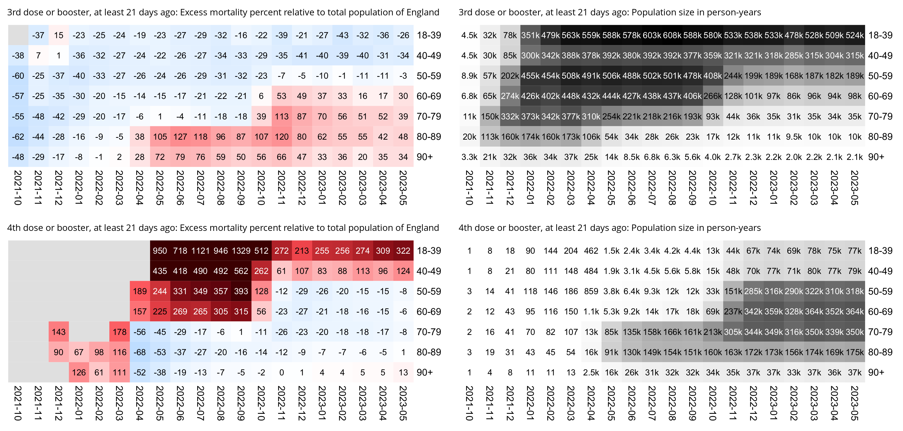
library(ggplot2);library(colorspace)
rowmean=\(x,y)t(sapply(split.data.frame(x,y),colMeans))
kimi=\(x){e=floor(log10(ifelse(x==0,1,abs(x))));e2=pmax(e,0)%/%3+1;p=!is.na(x);x[p]=paste0(sprintf(paste0("%.",ifelse(e[p]%%3==0,1,0),"f"),x[p]/1e3^(e2[p]-1)),c("","k","M","B","T")[e2[p]]);x}
download.file("https://www.ons.gov.uk/file?uri=/peoplepopulationandcommunity/birthsdeathsandmarriages/deaths/adhocs/1343dailydeathsbydateofoccurrence1stjune2014to31stmay2023bysingleyearofageengland/dailydeaths2014to2023england.xlsx","dailydeaths2014to2023england.xlsx")
dead=as.data.frame(readxl::read_excel("dailydeaths2014to2023england.xlsx",sheet=4,range="A6:CP3293"))
date=as.Date(paste0(dead$Year,"-",dead$Month,"-",dead$Day))
dead=dead[,-c(1:3)]
pop=read.csv("https://sars2.net/f/englandpop.csv",row.names=1)
pop=apply(pop,2,\(x)data.frame(x=date,y=predict(smooth.spline(data.frame(x=as.numeric(as.Date(paste0(rownames(pop),"-7-1"))),y=x)),as.numeric(date))$y))
ranges=data.frame(start=c(18,40,50,60,70,80,90))
ranges$end=c(ranges$start[-1]-1,90)
dead=apply(ranges,1,\(x)rowSums(dead[,(x[1]:x[2])+1,drop=F]))
pop=apply(ranges,1,\(x)rowSums(pop[,(x[1]:x[2])+1,drop=F]))
months=substr(date,1,7)
dead=t(rowsum(dead,months))
pop=t(rowmean(pop,months)/365*lubridate::days_in_month(paste0(unique(months),"-1")))
rownames(dead)=rownames(pop)=c(head(apply(ranges,1,paste,collapse="-"),-1),"90+")
pick=colnames(dead)>="2021-04";dead=dead[,pick];pop=pop[,pick]
pop=cbind(pop,Total=rowSums(pop));pop=rbind(pop,Total=colSums(pop))
dead=cbind(dead,Total=rowSums(dead));dead=rbind(dead,Total=colSums(dead))
m1=dead/pop*1e5
t=read.csv("https://sars2.net/f/ons-table-2-2023-august.csv",na.strings=c("x","<3"))
t=t[t$cause=="All causes",]
t2=data.frame(age=t$age,date=sprintf("%d-%02d",t$year,match(t$month,month.name)),status=ifelse(t$status=="Unvaccinated","Unvaccinated","Vaccinated"),pop=t$pop,dead=t$dead)
a=aggregate(t2[,4:5],t2[,1:3],sum,na.rm=T)
a=rbind(a,aggregate(a[,4:5],data.frame(age=a$age,date="Total",status=a$status),sum))
a=rbind(a,aggregate(a[,4:5],data.frame(age="Total",date=a$date,status=a$status),sum))
m2=with(subset(a,status=="Vaccinated"),tapply(dead/pop*1e5,list(age,date),c))
m3=with(subset(a,status=="Unvaccinated"),tapply(dead/pop*1e5,list(age,date),c))
m4=with(aggregate(a[,4:5],a[,1:2],sum),tapply(dead/pop*1e5,list(age,date),c))
r2=(m2/m1-1)*100
r3=(m3/m1-1)*100
r4=(m4/m1-1)*100
disp1=kimi(m1)
disp2=m2;disp2[!is.na(disp2)]=kimi(disp2[!is.na(disp2)])
disp3=m3;disp3[!is.na(disp3)]=kimi(disp3[!is.na(disp3)])
m1=m1^.6;m2=m2^.6;m3=m3^.6
maxcolor=max(m1,m2,m3,na.rm=T)
pal=colorRampPalette(hex(HSV(c(210,210,210,160,110,60,30,0,0,0),c(0,.25,rep(.5,8)),c(rep(1,8),.5,0))))(256)
pheatmap::pheatmap(m1,filename="i1.png",display_numbers=disp1,
cluster_rows=F,cluster_cols=F,legend=F,cellwidth=19,cellheight=19,fontsize=9,fontsize_number=8,
border_color=NA,na_col="gray90",
number_color=ifelse(m1>maxcolor*.8,"white","black"),
breaks=seq(0,maxcolor,,256),pal)
pheatmap::pheatmap(m2,filename="i2.png",display_numbers=disp2,
cluster_rows=F,cluster_cols=F,legend=F,cellwidth=19,cellheight=19,fontsize=9,fontsize_number=8,
border_color=NA,na_col="gray90",
number_color=ifelse(m2>maxcolor*.8,"white","black"),
breaks=seq(0,maxcolor,,256),pal)
pheatmap::pheatmap(m3,filename="i3.png",display_numbers=disp3,
cluster_rows=F,cluster_cols=F,legend=F,cellwidth=19,cellheight=19,fontsize=9,fontsize_number=8,
border_color=NA,na_col="gray90",
number_color=ifelse(m3>maxcolor*.8,"white","black"),
breaks=seq(0,maxcolor,,256),pal)
system("w=`identify -format %w i1.png`;convert i1.png -gravity northwest \\( -splice x16 -size $[w-44]x -pointsize 38 caption:'General population of England: Deaths per 100k person-years' -extent $[w-44]x -gravity center \\) +swap -append l1.png")
system("w=`identify -format %w i2.png`;convert i2.png -gravity northwest \\( -splice x16 -size $[w-44]x -pointsize 38 caption:'Vaccinated: Deaths per 100k person-years' -extent $[w-44]x -gravity center \\) +swap -append l2.png")
system("w=`identify -format %w i3.png`;convert i3.png -gravity northwest \\( -splice x16 -size $[w-44]x -pointsize 38 caption:'Unvaccinated: Deaths per 100k person-years' -extent $[w-44]x -gravity center \\) +swap -append l3.png")
# r2=rbind(r2,Weighted=colSums(head(t(t(r2*pop2)/colSums(pop2)),-1)))
# r3=rbind(r3,Weighted=colSums(head(t(t(r3*pop3)/colSums(pop3)),-1)))
disp2=round(r2)
disp3=round(r3)
disp4=round(r4)
maxcolor=max(r2,r3)
pal=colorRampPalette(hex(HSV(c(210,210,210,210,0,0,0,0,0),c(1,.8,.6,.3,0,.3,.6,.8,1),c(.3,.65,1,1,1,1,1,.65,.3))))(256)
pheatmap::pheatmap(r2,filename="r2.png",display_numbers=disp2,
cluster_rows=F,cluster_cols=F,legend=F,cellwidth=19,cellheight=19,fontsize=9,fontsize_number=8,
border_color=NA,na_col="gray90",number_color=ifelse(abs(r2)>maxcolor*.6,"white","black"),
breaks=seq(-maxcolor,maxcolor,,256),pal)
pheatmap::pheatmap(r3,filename="r3.png",display_numbers=disp3,
cluster_rows=F,cluster_cols=F,legend=F,cellwidth=19,cellheight=19,fontsize=9,fontsize_number=8,
border_color=NA,na_col="gray90",number_color=ifelse(abs(r3)>maxcolor*.6,"white","black"),
breaks=seq(-maxcolor,maxcolor,,256),pal)
pheatmap::pheatmap(r4,filename="r4.png",display_numbers=disp4,
cluster_rows=F,cluster_cols=F,legend=F,cellwidth=19,cellheight=19,fontsize=9,fontsize_number=8,
border_color=NA,na_col="gray90",number_color=ifelse(abs(r4)>maxcolor*.6,"white","black"),
breaks=seq(-maxcolor,maxcolor,,256),pal)
system("w=`identify -format %w r4.png`;convert r4.png -gravity northwest \\( -splice x16 -size $[w-44]x -pointsize 38 caption:'Unvaccinated + vaccinated: Deaths per 100k person-years' -extent $[w-44]x -gravity center \\) +swap -append rl4.png")
system("w=`identify -format %w r2.png`;convert r2.png -gravity northwest \\( -splice x16 -size $[w-44]x -pointsize 35 caption:'Vaccinated: Excess mortality percent relative to general population of England' -extent $[w-44]x -gravity center \\) +swap -append rl2.png")
system("w=`identify -format %w r3.png`;convert r3.png -gravity northwest \\( -splice x16 -size $[w-44]x -pointsize 35 caption:'Unvaccinated: Excess mortality percent relative to general population of England' -extent $[w-44]x -gravity center \\) +swap -append rl3.png")
pop2=with(subset(a,status=="Vaccinated"),tapply(pop,list(age,date),c))
pop3=with(subset(a,status=="Unvaccinated"),tapply(pop,list(age,date),c))
disp2=ifelse(pop2<10,pop2,kimi(pop2))
disp3=ifelse(pop3<10,pop3,kimi(pop3))
maxcolor=1e6
pal=sapply(seq(1,0,,256),\(i)rgb(i,i,i))
pheatmap::pheatmap(pop2,filename="p2.png",display_numbers=disp2,
cluster_rows=F,cluster_cols=F,legend=F,cellwidth=19,cellheight=19,fontsize=9,fontsize_number=8,
border_color=NA,na_col="white",number_color=ifelse(pop2>maxcolor*.45,"white","black"),
breaks=seq(0,maxcolor,,256),pal)
pheatmap::pheatmap(pop3,filename="p3.png",display_numbers=disp3,
cluster_rows=F,cluster_cols=F,legend=F,cellwidth=19,cellheight=19,fontsize=9,fontsize_number=8,
border_color=NA,na_col="white",number_color=ifelse(pop3>maxcolor*.45,"white","black"),
breaks=seq(0,maxcolor,,256),pal)
system("w=`identify -format %w p2.png`;convert p2.png -gravity northwest \\( -splice x16 -size $[w-44]x -pointsize 35 caption:'Vaccinated: Population size in person-years' -extent $[w-44]x -gravity center \\) +swap -append pl2.png")
system("w=`identify -format %w p3.png`;convert p3.png -gravity northwest \\( -splice x16 -size $[w-44]x -pointsize 35 caption:'Unvaccinated: Population size in person-years' -extent $[w-44]x -gravity center \\) +swap -append pl3.png")
system("montage -geometry +0+0 -tile 2x l[23].png m1.png")
system("montage -geometry +0+0 -tile 2x {rl2,rl3,pl2,pl3}.png m2.png")
system("montage -geometry +0+0 -gravity west -tile 1x l1.png m[12].png 1.png;mogrify -bordercolor white -border 10 1.png")
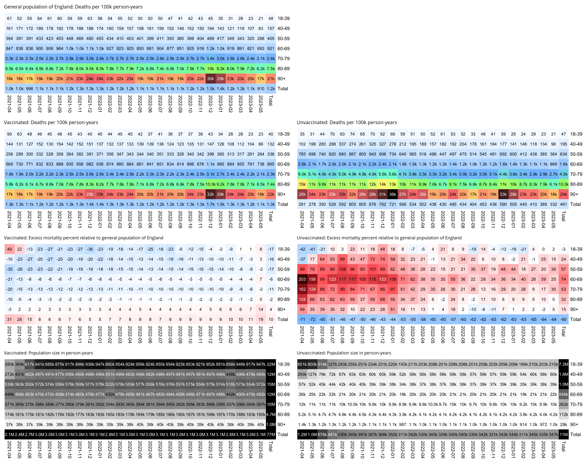
library(ggplot2);library(colorspace)
rowmean=\(x,y)t(sapply(split.data.frame(x,y),colMeans))
kimi=\(x){e=floor(log10(ifelse(x==0,1,abs(x))));e2=pmax(e,0)%/%3+1;p=!is.na(x);x[p]=paste0(sprintf(paste0("%.",ifelse(e[p]%%3==0,1,0),"f"),x[p]/1e3^(e2[p]-1)),c("","k","M","B","T")[e2[p]]);x}
# download.file("https://www.ons.gov.uk/file?uri=/peoplepopulationandcommunity/birthsdeathsandmarriages/deaths/adhocs/1343dailydeathsbydateofoccurrence1stjune2014to31stmay2023bysingleyearofageengland/dailydeaths2014to2023england.xlsx","dailydeaths2014to2023england.xlsx")
dead=as.data.frame(readxl::read_excel("dailydeaths2014to2023england.xlsx",sheet=4,range="A6:CP3293"))
date=as.Date(paste0(dead$Year,"-",dead$Month,"-",dead$Day))
dead=dead[,-c(1:3)]
pop=read.csv("https://sars2.net/f/englandpop.csv",row.names=1)
pop=apply(pop,2,\(x)predict(smooth.spline(data.frame(x=as.numeric(as.Date(paste0(rownames(pop),"-7-1"))),y=x)),as.numeric(date))$y)|>"rownames<-"(as.character(date))
ranges=data.frame(start=c(18,40,50,60,70,80,90))
ranges$end=c(ranges$start[-1]-1,90)
dead=apply(ranges,1,\(x)rowSums(dead[,(x[1]:x[2])+1,drop=F]))
pop=apply(ranges,1,\(x)rowSums(pop[,(x[1]:x[2])+1,drop=F]))
months=substr(date,1,7)
dead=t(rowsum(dead,months))
pop=t(rowmean(pop,months)/365*lubridate::days_in_month(paste0(unique(months),"-1")))
rownames(dead)=rownames(pop)=c(head(apply(ranges,1,paste,collapse="-"),-1),"90+")
pick=colnames(dead)>="2021-04";dead=dead[,pick];pop=pop[,pick]
pop=cbind(pop,Total=rowSums(pop));pop=rbind(pop,Total=colSums(pop))
dead=cbind(dead,Total=rowSums(dead));dead=rbind(dead,Total=colSums(dead))
m1=dead/pop*1e5
t=read.csv("https://sars2.net/f/ons-table-2-2023-august.csv",na.strings=c("x","<3"))|>subset(cause=="All causes")
t2=data.frame(age=t$age,date=sprintf("%d-%02d",t$year,match(t$month,month.name)),status=sub("dose.*","dose",t$status),pop=t$pop,dead=t$dead)
a=aggregate(t2[,4:5],t2[,1:3],sum,na.rm=T)
a2=a[a$status!="Unvaccinated",]
a=rbind(a,aggregate(a2[,4:5],cbind(a2[,1:2],status="Ever vaccinated"),sum,na.rm=T))
a$status=factor(a$status,c("Ever vaccinated",unique(status)))
a=rbind(a,aggregate(a[,4:5],cbind(age="Total",a[,2:3]),sum))
a=rbind(a,aggregate(a[,4:5],cbind(date="Total",a[,c(1,3)]),sum))
a$cmr=a$dead/a$pop*1e5
a$date=factor(a$date,unique(a$date))
excess=lapply(split(a,a$status),\(x)(tapply(x$cmr,list(x$age,x$date),c)))
pop=lapply(split(a,a$status),\(x)tapply(x$pop,list(x$age,x$date),c))
max1=900;max2=1e6;exp1=.6;exp2=.7
pal1=colorRampPalette(hex(HSV(c(210,210,210,210,0,0,0,0,0),c(1,.8,.6,.3,0,.3,.6,.8,1),c(.3,.65,1,1,1,1,1,.65,.3))))(256)
pal2=sapply(seq(1,0,,256),\(i)rgb(i,i,i))
for(i in 1:length(excess)){
m=excess[[i]]
ex=(m/m1-1)*100
mpop=pop[[i]]
disp=round(rbind(ex[-nrow(ex),],colSums(ex[-nrow(ex),]*mpop[-nrow(mpop),])/colSums(mpop[-nrow(mpop),])))
rat=(m-m1)/ifelse(m>m1,m1,m)*100
rat[is.infinite(rat)]=-max1
rat0=rat[-nrow(rat),-ncol(rat)]
pop0=mpop[-nrow(mpop),-ncol(mpop)]
rat=rbind(head(rat,-1),Weighted=colSums(head(rat,-1)*head(mpop,-1))/colSums(head(mpop,-1)))
rat[nrow(rat),ncol(rat)]=sum(rat0*pop0,na.rm=T)/sum(pop0)
ex[nrow(ex),ncol(ex)]=sum(ex[-nrow(ex),-ncol(ex)]*pop0,na.rm=T)/sum(pop0)
pheatmap::pheatmap(sign(rat)*abs(rat)^exp1,filename=paste0("e",i,".png"),display_numbers=disp,
cluster_rows=F,cluster_cols=F,legend=F,cellwidth=19,cellheight=19,fontsize=9,fontsize_number=7.8,
border_color=NA,na_col="gray90",number_color=ifelse(abs(rat)^exp1>max1^exp1*.53,"white","black"),
breaks=seq(-max1^exp1,max1^exp1,,256),pal1)
m=pop[[i]]
pheatmap::pheatmap(m^exp2,filename=paste0("p",i,".png"),display_numbers=ifelse(m<10,m,kimi(m)),
cluster_rows=F,cluster_cols=F,legend=F,cellwidth=19,cellheight=19,fontsize=9,fontsize_number=7.8,
border_color=NA,na_col="gray90",number_color=ifelse(m^exp2>max2^exp2*.42,"white","black"),
breaks=seq(0,max2^exp2,,256),pal2)
system(paste0("w=`identify -format %w e",i,".png`;convert e",i,".png -gravity northwest \\( -splice x16 -size $[w-44]x -pointsize 40 caption:'",names(excess)[i],": Excess mortality percent relative to general population of England' -extent $[w-44]x -gravity center \\) +swap -append -bordercolor white -border 6 +repage e",i,"..png"))
system(paste0("w=`identify -format %w p",i,".png`;convert p",i,".png -gravity northwest \\( -splice x16 -size $[w-44]x -pointsize 40 caption:'",names(excess)[i],": Population size in person-years' -extent $[w-44]x -gravity center \\) +swap -append -bordercolor white -border 6 +repage p",i,"..png"))
}
system("montage -geometry +0+0 -tile 2x {e1,p1,e2,p2,e3,p3,e4,p4,e5,p5,e6,p6}..png 1.png")
This script combines the categories for people who were vaccinated within 3 weeks or more than 3 weeks ago into a single category, which is possible because it uses CMR and not ASMR.
The "Weighted" row shows the weighted average of the excess mortality percent of the age groups where the weight is the number of person-years in each age group.
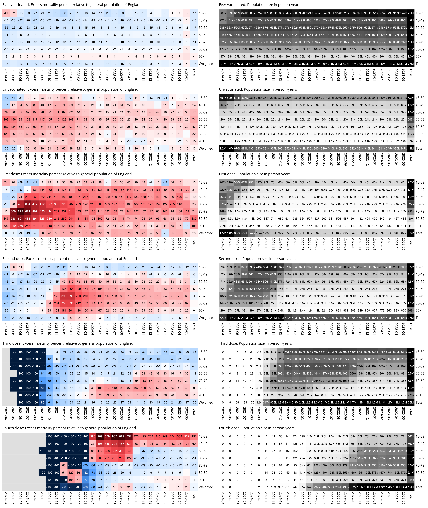
library(ggplot2)
cutl=\(x,y)cut(x,c(y,Inf),y,T,F)
rowmean=\(x,y)t(sapply(split.data.frame(x,y),colMeans))
kim=\(x)ifelse(x>=1e3,ifelse(x>=1e6,paste0(x/1e6,"M"),paste0(x/1e3,"k")),x)
# download.file("https://www.ons.gov.uk/file?uri=/peoplepopulationandcommunity/birthsdeathsandmarriages/deaths/adhocs/1343dailydeathsbydateofoccurrence1stjune2014to31stmay2023bysingleyearofageengland/dailydeaths2014to2023england.xlsx","dailydeaths2014to2023england.xlsx")
dead=as.data.frame(readxl::read_excel("dailydeaths2014to2023england.xlsx",sheet=4,range="A6:CP3293"))
date=as.Date(paste0(dead$Year,"-",dead$Month,"-",dead$Day))
dead=dead[,-c(1:3)]
pop=read.csv("http://sars2.net/f/englandpop.csv",row.names=1)
pop=apply(pop,2,\(x)predict(smooth.spline(data.frame(x=as.numeric(as.Date(paste0(rownames(pop),"-7-1"))),y=x)),as.numeric(date))$y)
months=substr(date,1,7)
ages=c(0,18,seq(40,90,10))
dead=t(rowsum(t(rowsum(dead,months)),cutl(0:90,ages)))
pop=t(rowmean(pop,months)/365*lubridate::days_in_month(paste0(unique(months),"-1")))|>rowsum(cutl(0:90,ages))|>t()
colnames(dead)=colnames(pop)=c(paste0(head(ages,-1),"-",ages[-1]-1),"90+")
pick=rownames(dead)>="2020-01";dead=dead[pick,-1];pop=pop[pick,-1]
for(age in colnames(dead)){
t=read.csv("http://sars2.net/f/ons-table-2-2023-august.csv",na.strings=c("x","<3"))
t=t[t$cause=="All causes"&t$age==age,]
t0=read.csv("http://sars2.net/f/ons-table-2-2022-july.csv",na.strings=c("x","<3"))|>subset(cause=="All causes")
t0=t0[t0$age==age,]
t=rbind(subset(t0,year==2021&month%in%month.name[1:3]),t)
date=as.Date(paste0(t$year,"-",match(t$month,month.name),"-1"))
a=aggregate(t[,6:7],list(status=sub(" dose.*"," dose",t$status),date=date),sum,na.rm=T)
a2=a[a$status!="Unvaccinated",]
a3=aggregate(a[,3:4],data.frame(status="ONS data total",date=a$date),sum)
a=rbind(a,a3,aggregate(a2[,3:4],data.frame(status="Vaccinated",date=a2$date),sum))
a=rbind(a,data.frame(status="England total",date=as.Date(paste0(rownames(dead),"-1")),dead=dead[,age],pop=pop[,age]))
label=c("England total","ONS data total","Vaccinated","Unvaccinated","First dose","Second dose","Third dose","Fourth dose")
a$status=factor(a$status,label)
a$cmr=a$dead/a$pop*1e5
a$frac=a$pop/with(subset(a,!a$status%in%label[1:3]),tapply(pop,date,sum))[as.character(a$date)]
a$frac[a$status%in%label[1:3]]=0
ystart=0;xstart=min(a$date);xend=max(a$date)
cand=c(sapply(c(1,2,5),\(x)x*10^c(-10:10)))
ymax=max(a$cmr,na.rm=T)
ystep=cand[which.min(abs(cand-ymax/5))]
yend=ystep*ceiling(ymax/ystep)
ybreak=seq(0,yend,ystep)
color=c("gray30","gray70","black",hcl(c(210,120,60,0,300)+15,100,60))
title=paste0("Ages ",age)
ggplot(a,aes(x=date,y=cmr))+
geom_area(aes(y=frac*yend*.9999,fill=status,color=status),linewidth=.1,show.legend=F,alpha=.3)+
geom_hline(yintercept=c(ystart,yend),linewidth=.3,lineend="square")+
geom_vline(xintercept=c(xstart,xend),linewidth=.3,lineend="square")+
geom_line(aes(color=status,linetype=status),linewidth=.3)+
geom_point(aes(color=status),data=subset(a,status!="General population of England"),size=.6,show.legend=F)+
scale_x_date(breaks=seq(xstart,xend,"2 month"),date_labels="%b\n%y")+
scale_y_continuous(limits=c(ystart,yend),breaks=c(0,ybreak),labels=c("1.5k",kim(ybreak)),sec.axis=sec_axis(trans=~./yend*100))+
coord_cartesian(clip="off",expand=F)+
labs(x=NULL,y=NULL,color=title,linetype=title)+
scale_color_manual(values=color)+
scale_fill_manual(values=color)+
scale_linetype_manual(values=c(2,rep(1,7)))+
guides(color=guide_legend(ncol=1))+
guides(colour=guide_legend(override.aes=list(linewidth=.4)))+
theme(axis.text=element_text(size=6,color="black"),
axis.text.y.left=element_text(color=alpha("black",c(0,rep(1,length(ybreak))))),
axis.ticks=element_line(linewidth=.3),
axis.ticks.length=unit(.2,"lines"),
axis.title=element_text(size=7.5),
legend.background=element_blank(),
legend.box.just="center",
legend.direction="vertical",
legend.key=element_rect(fill=alpha("white",0)),
legend.spacing.x=unit(.15,"lines"),
legend.key.size=unit(.68,"lines"),
legend.key.width=unit(0.89,"lines"),
legend.box.background=element_rect(fill=alpha("white",.7),color="black",linewidth=.3),
legend.margin=margin(.4,.3,.2,.3,"lines"),
legend.position=c(0,1),
legend.justification=c(0,1),
legend.text=element_text(size=6.3,vjust=.5),
legend.title=element_text(size=8.3),
panel.background=element_rect(fill="white"),
panel.grid=element_blank(),
plot.margin=margin(.2,.1,0,.1,"lines"),
plot.subtitle=element_text(size=6,margin=margin(0,0,.6,0,"lines")),
plot.title=element_text(size=9,margin=margin(.1,0,.4,0,"lines")))
ggsave(paste0("age.",age,".png"),width=4.8,height=2.5,dpi=400)
}
tit="ONS dataset for mortality by vaccination status: Deaths per 100k person-years"
sub="The right axis displays the percentage of each vaccination status group.
The line labeled \"England total\" shows the general population of England which includes people who are not included in the ONS dataset. The line labeled \"ONS data total\" consists of vaccinated and unvaccinated people in the ONS dataset added together.
People are counted as vaccinated from the day of vaccination and not with a delay of 1-4 weeks. The group labeled \"First dose\" is a sum of the groups in the ONS data labeled \"First dose, less than 21 days ago\" and \"First dose, at least 21 days ago\", and similarly for other doses.
The ONS dataset for mortality by vaccination status was released in August 2023, and the dataset for deaths in the general English population was released in July 2023, so both datasets are missing a fairly large number of deaths because of a registration delay.
Data for January-March 2021 is taken from the July 2022 edition of the ONS dataset, which was linked to the 2011 census and not the 2021 census like the subsequent editions.
Sources: ons.gov.uk/peoplepopulationandcommunity/birthsdeathsandmarriages/deaths/datasets/
deathsbyvaccinationstatusengland, ons.gov.uk/peoplepopulationandcommunity/birthsdeathsandmarriages/
deaths/adhocs/1343dailydeathsbydateofoccurrence1stjune2014to31stmay2023bysingleyearofageengland,
ons.gov.uk/peoplepopulationandcommunity/populationandmigration/populationestimates/datasets/
populationestimatesforukenglandandwalesscotlandandnorthernireland."
system(paste0("wh=$(identify -format %w\\ %h age.18-39.png|awk '{print$1,$2}');convert -font '/Library/Fonts/Arial Unicode.ttf' -interline-spacing -5 -gravity west -size $(awk '{print ($1-80)\"x\"}'<<<\"$wh\") \\( -pointsize 50 -bordercolor white -border 44 caption:'",tit,"' \\) -gravity southwest -shave x40 \\( -pointsize 38 -border 40 caption:'",sub,"' -gravity northwest -shave x48 \\) -append -gravity west -extent $(tr \\ x<<<\"$wh\") 0.png"))
system("montage -geometry +0+0 -tile 2x age.* 0.png 1.png;mogrify -trim -bordercolor white -border 30 1.png")
system("qlmanage -p 1.png&>/dev/null")
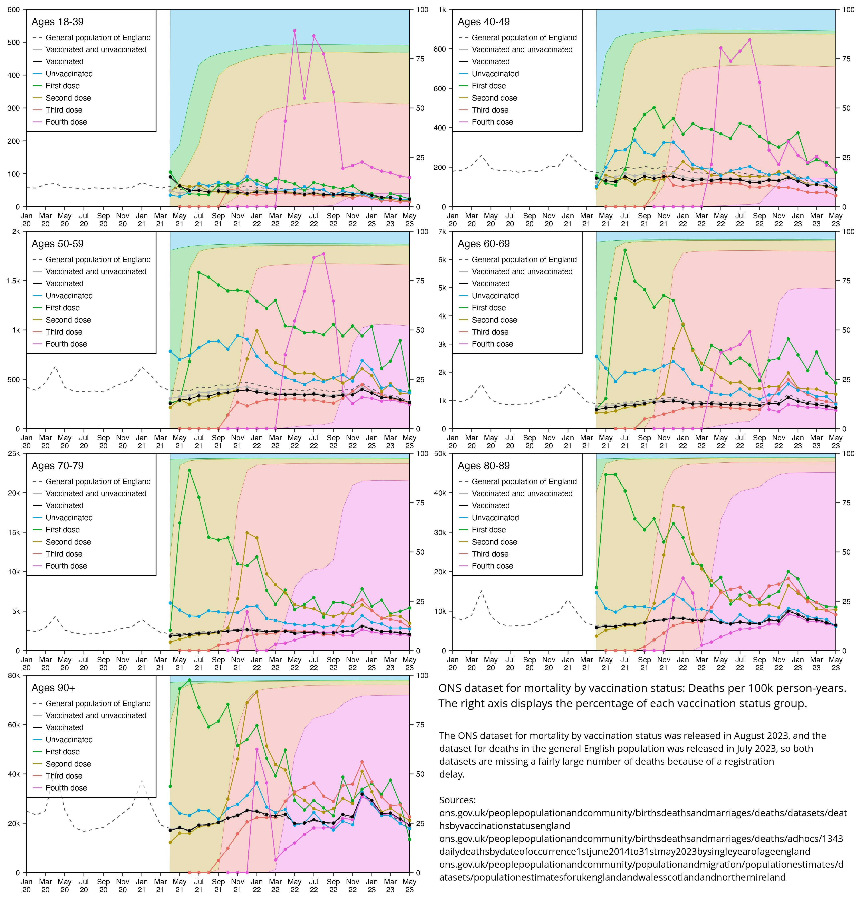
In old versions of the ONS spreadsheet for mortality by vaccination status up to the version published in July 2022, they included a table which showed the number of COVID and non-COVID deaths by weeks after vaccination. [https://www.ons.gov.uk/peoplepopulationandcommunity/birthsdeathsandmarriages/deaths/datasets/deathsbyvaccinationstatusengland, Table 9]
library(colorspace)
kimi=\(x){e=floor(log10(ifelse(x==0,1,abs(x))));e2=pmax(e,0)%/%3+1;p=!is.na(x);x[p]=paste0(sprintf(paste0("%.",ifelse(e[p]%%3==0,1,0),"f"),x[p]/1e3^(e2[p]-1)),c("","k","M","B","T")[e2[p]]);x}
t=read.csv("http://sars2.net/f/ons-table-9-deaths-by-weeks-after-vaccination.csv",na.strings="<3")
t=t[t$week!="12+",]
t$week=as.numeric(t$week)
m1=xtabs(rowSums(t[,3:4],na.rm=T)~age+week,t)
m2=xtabs(covid~age+week,t)
m3=xtabs(noncovid~age+week,t)
l=list(m1,m2,m3)
pal=sapply(seq(1,0,,256),\(i)rgb(i,i,i))
exp=1.5
for(i in 1:3){
m=l[[i]]
m=rbind(m,Total=colSums(m))
disp=ifelse(m<10,m,kimi(m))
m=m/apply(m,1,max)
pheatmap::pheatmap(m^exp,filename=paste0("i",i,".png"),display_numbers=disp,
cluster_rows=F,cluster_cols=F,legend=F,cellwidth=19,cellheight=19,fontsize=9,fontsize_number=8,
border_color=NA,na_col="gray90",number_color=ifelse(m^exp>1^exp*.4,"white","black"),
breaks=seq(0,1^exp,,256),pal)
system(paste0("w=`identify -format %w i",i,".png`;convert i",i,".png -font Arial-Bold -gravity northwest \\( -splice x16 -size $[w-44]x -pointsize 38 caption:'",c("COVID plus non-COVID","COVID","Non-COVID")[i]," deaths' -extent $[w-44]x -gravity center \\) +swap -append +repage l",i,".png"))
}
system(paste0("wh=$(identify -format %w\\ %h l1.png);convert -gravity west -size $(awk '{print ($1-80)\"x\"}'<<<\"$wh\") -pointsize 38 -font Arial -bordercolor white -border 36 caption:'Deaths by weeks after vaccination and age group. Source: ONS dataset for mortality by vaccination status, Table 9 of July 2022 edition (removed in newer versions).' -append -extent $(tr \\ x<<<\"$wh\") l0.png"))
system("montage -geometry +0+0 -tile 2x l[0-3].png 1.png")
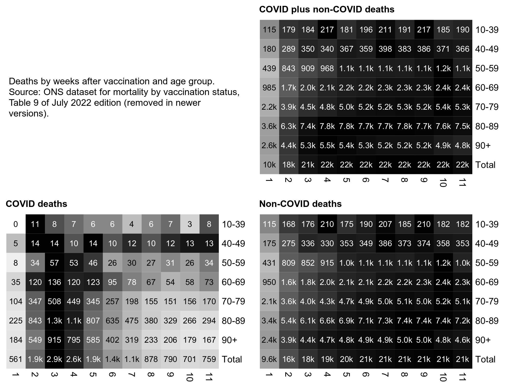
For some reason there was a huge number of COVID deaths on the third and fourth weeks from vaccination, so in some age groups there were more than 5 times as many COVID deaths on the 3rd weeks from vaccination as 10 weeks from vaccination. It might be because the first two doses were rolled out at the tail end of a COVID wave, and the first booster was rolled out before a short-lasting spike in COVID cases caused by Omicron, or if could also be that the vaccine still offered limited protection on the third week from vaccination.
At first I wasn't sure if the ONS table only included the first dose or all doses, but the title of table 9 also indicates that it includes "all registered deaths": "Whole period counts of all registered deaths grouped by how many weeks after vaccination the deaths occurred; for deaths involving COVID-19 and deaths not involving COVID-19, deaths occurring between 1 January 2021 and 31 March 2022, England". Table 9 includes a total of 606,534 deaths, which almost matches the total number of ever-vaccinated deaths in Table 1 (570,872). But I don't know why Table 9 includes slightly more deaths than Table 1.
This uses UN's "World Population Prospects" dataset which starts in 1950: https://population.un.org/wpp/Download/Standard/CSV/. The dataset uses modeled data for many developing countries, which explains why there is little variation in the CMR of many developing countries during the first decades of data.
The dataset was published in July 2022, but it uses modeled data from January 2022 onwards: "In the 2022 revision, the figures from 1950 up to 2021 are treated as estimates, and thus the projections for each country or area begin on 1 January 2022 and extend until 2100. Because population data are not necessarily available for that date, the 2022 estimate is derived from the most recent population data available for each country, obtained usually from a population census or a population register, projected to 2022 using all available data on fertility, mortality and international migration trends between the reference date of the population data available and 1 January 2022." [https://population.un.org/wpp/Methodology/] Notes about the dataset also say: "For 74 countries or areas, the most recent available population count was from the period 2005-2014. For the remaining 11 countries or areas, the most recent available census data were from before 2005."
library(ComplexHeatmap)
library(circlize)
library(colorspace)
t=read.csv("WPP2022_Demographic_Indicators_Medium.csv")
pick=t[t$Time==2020&t$TPopulation1July>=1e3&t$LocTypeName=="Country/Area","Location"]
t2=t[t$Location%in%pick,]
t2%@%nu('Time',2022)
m=t(sapply(split.data.frame(t2,t2$Location),\(x){
v=setNames(x$Deaths/x$TPopulation1July,x$Time)
100*(v[-1]/head(v,-1)-1)
}))
m=m[order(setNames(t$SortOrder,t$Location)[rownames(m)]),]
rowmax=apply(m,1,\(x)x==max(x))
png("1.png",w=ncol(m)*30+1000,h=nrow(m)*30+1000,res=72)
ht_opt$COLUMN_ANNO_PADDING=unit(0,"mm")
ht_opt$ROW_ANNO_PADDING=unit(0,"mm")
disp=m
m=ifelse(m<0,-sqrt(abs(m)),sqrt(m))
maxcolor=.8*max0(abs(m))
maxcolor=sqrt(150)
Heatmap(
m,
show_heatmap_legend=F,
show_column_names=F,
show_row_names=F,
width=unit(ncol(m)*30,"pt"),
height=unit(nrow(m)*30,"pt"),
row_dend_width=unit(200,"pt"),
clustering_distance_rows="euclidean",
cluster_columns=F,
cluster_rows=F,
column_title="Percentage change in crude mortality rate compared to previous year, population.un.org/wpp/Download/Standard/CSV/, file \"1950-2100, medium\" in section \"Demographic Indicators\".",
column_title_gp=gpar(fontsize=23),
rect_gp=gpar(col="gray80",lwd=0),
top_annotation=columnAnnotation(text=anno_text(gt_render(colnames(m),padding=unit(c(3,3,3,3),"mm")),just="left",rot=90,location=unit(0,"npc"),gp=gpar(fontsize=17,border="gray70",lwd=1))),
bottom_annotation=columnAnnotation(text=anno_text(gt_render(colnames(m),padding=unit(c(3,3,3,3),"mm")),just="left",rot=270,gp=gpar(fontsize=17,border="gray70",lwd=1))),
left_annotation=rowAnnotation(text=anno_text(gt_render(rownames(m),padding=unit(c(3,3,3,3),"mm")),just="right",location=unit(1,"npc"),gp=gpar(fontsize=17,border="gray70",lwd=1))),
right_annotation=rowAnnotation(text=anno_text(gt_render(rownames(m),padding=unit(c(3,3,3,3),"mm")),just="left",location=unit(0,"npc"),gp=gpar(fontsize=17,border="gray70",lwd=1))),
# col=colorRamp2(seq(0,maxcolor,,15),hex(HSV(c(210,210,210,210,160,110,60,40,20,0,0,0,0,0,0),c(0,.166,.333,rep(.5,8),.6,.7,.8,.9),c(rep(1,11),.75,.5,.25,0)))),
col=colorRamp2(seq(-maxcolor,maxcolor,,9),hex(HSV(c(210,210,210,210,0,0,0,0,0),c(.7,.7,.6,.3,0,.3,.6,.7,.7),c(.3,.65,1,1,1,1,1,.65,.3)))),
cell_fun=\(j,i,x,y,w,h,fill)grid.text(sprintf("%.0f",disp[i,j]),x,y,gp=gpar(fontface=ifelse(rowmax[j,i],4,"plain"),fontsize=16,col=ifelse(abs(m[i,j])>=maxcolor*.5,"white","black")))
)
dev.off()
system("mogrify -gravity center -trim -border 16 -bordercolor white 1.png")
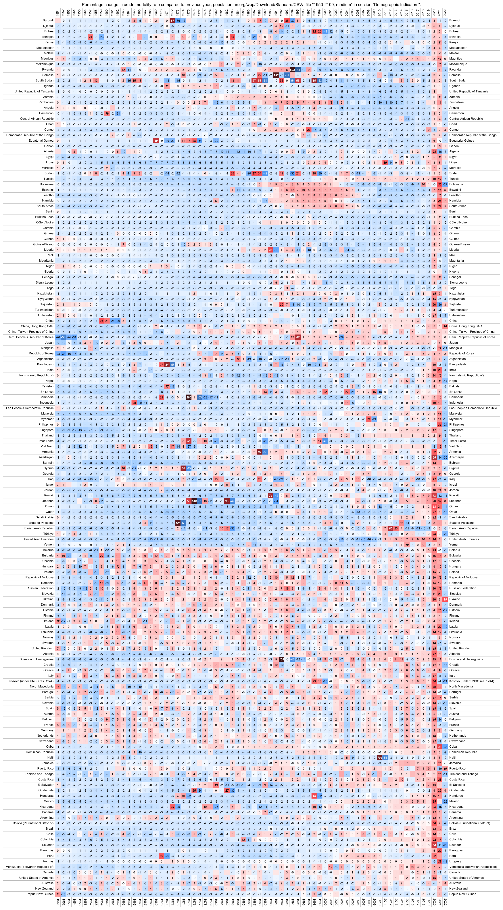
WHO has a dataset for monthly excess mortality in 2020 and 2021 where they use reported data for some countries and modeled data for other countries. [https://www.who.int/data/sets/global-excess-deaths-associated-with-covid-19-modelled-estimates] The dataset uses modeled data for most sub-Saharan African countries so I don't know how accurate it is though.
OWID has vaccination data for almost all African countries, but the data ends in 2022 for some countries, and some countries may have recorded only a part of their vaccinations.
library(ggplot2)
# `geom_mark_hull` draws the hulls incorrectly in new versions of `ggforce` so you need to install an old version of `ggforce`:
# install.packages("https://cran.r-project.org/src/contrib/Archive/ggforce/ggforce_0.3.4.tar.gz")
# download.file("https://covid.ourworldindata.org/data/owid-covid-data.csv","owid-covid-data.csv")
# https://www.who.int/data/sets/global-excess-deaths-associated-with-covid-19-modelled-estimates
who=read.csv("https://pastebin.com/raw/PVTHyL8V")
who2=who[who$year==2021,]
excess=100*tapply(who2$excess.mean/who2$expected.mean,who2$iso3,mean)
t=read.csv("owid-covid-data.csv")
t2=t[grepl("2021",t$date)&t$continent=="Africa",]
vax=tapply(t2$total_vaccinations_per_hundred,t2$iso_code,\(x){x=zoo::na.approx(x,na.rm=F);first=which(!is.na(x))[1];if(!is.na(first))x[1:first]=0;x})
vax=sapply(vax,mean,na.rm=T)[sapply(vax,\(x)sum(is.na(x))<50)]
xy=na.omit(data.frame(x=vax,y=excess[names(vax)],iso3=names(vax),name=setNames(t2$location,t2$iso_code)[names(vax)]))
regions=read.csv("https://raw.githubusercontent.com/lukes/ISO-3166-Countries-with-Regional-Codes/master/all/all.csv")
k=factor(paste(regions$sub.region,regions$intermediate.region)[match(xy$iso3,regions$alpha.3)])
set.seed(0)
hue=sample(seq(15,375,,nlevels(k)+1)[-1])
color=hcl(hue,90,50)
fill=hcl(hue,90,60)
candidates=c(sapply(c(1,2,5),\(x)x*10^c(-10:10)))
xstep=candidates[which.min(abs(candidates-max(xy$x)/8))]
ystep=candidates[which.min(abs(candidates-max(xy$y)/6))]
xstart=xstep*floor(min(xy$x)/xstep)
xend=xstep*ceiling(max(xy$x)/xstep)
ystart=ystep*floor(min(xy$y)/ystep)
yend=ystep*ceiling(max(xy$y)/ystep)
ggplot(xy,aes(x,y))+
geom_vline(xintercept=c(xstart,xend),color="gray75",linewidth=.3,lineend="square")+
geom_hline(yintercept=c(ystart,yend),color="gray75",linewidth=.3,lineend="square")+
ggforce::geom_mark_hull(aes(color=k,fill=k),concavity=1000,radius=unit(.3,"lines"),expand=unit(.3,"lines"),alpha=.2,size=.15)+
geom_smooth(method="lm",formula=y~x,size=.35,se=F)+
geom_point(aes(color=k),size=.6)+
# geom_text(aes(color=k),label=name,size=2.5,vjust=-.7)+
ggrepel::geom_text_repel(aes(color=k,label=name),size=2.5,max.overlaps=Inf,segment.size=.1,min.segment.length=.2,box.padding=.07)+
coord_cartesian(clip="off")+
ggtitle(paste0("Average cumulative vaccine doses per hundred in 2021 compared to average excess mortality in 2021 (r≈",sprintf("%.2f",cor(xy$x,xy$y)),")"),"Sources:
covid.ourworldindata.org/data/owid-covid-data.csv
who.int/data/sets/global-excess-deaths-associated-with-covid-19-modelled-estimates")+
labs(x="Average cumulative vaccine doses per hundred in 2021",y="Average excess mortality percent in 2021")+
scale_x_continuous(limits=c(xstart,xend),breaks=seq(xstart,xend,xstep),expand=expansion(0))+
scale_y_continuous(limits=c(ystart,yend),breaks=seq(ystart,yend,ystep),expand=expansion(0))+
scale_fill_manual(values=fill)+
scale_color_manual(values=color)+
theme(
axis.text=element_text(size=7,color="black"),
axis.text.y=element_text(angle=90,vjust=1,hjust=.5),
axis.ticks=element_blank(),
axis.ticks.length=unit(0,"lines"),
axis.title=element_text(size=8),
legend.position="none",
panel.background=element_rect(fill="white"),
panel.grid.major=element_line(color="gray85",linewidth=.2),
plot.margin=margin(.5,.6,.5,.6,"lines"),
plot.subtitle=element_text(size=7.5),
plot.title=element_text(size=9)
)
ggsave("1.png",width=7,height=5)
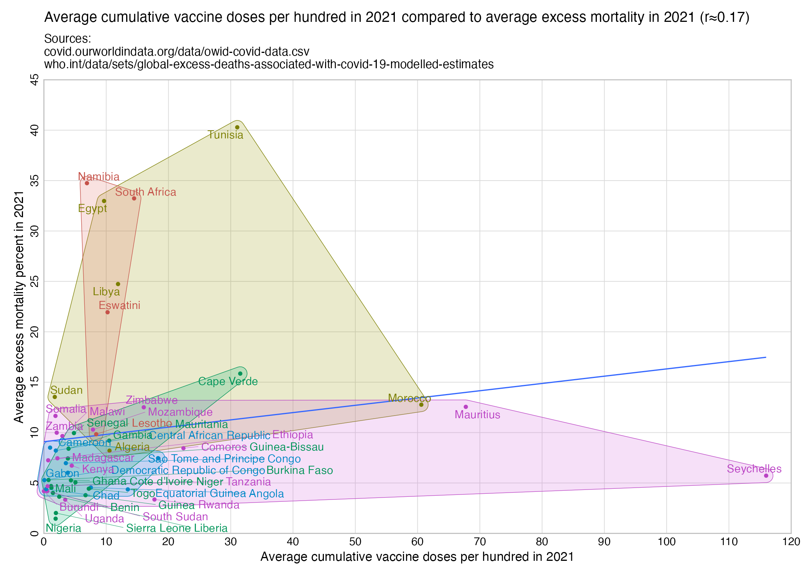
Source: https://github.com/cheongsa/Coronavirus-COVID-19-statistics-in-China.
library(colorspace)
t=read.csv("https://github.com/cheongsa/Coronavirus-COVID-19-statistics-in-China/raw/master/China_daily_new_infections.csv",check.names=F)
# t=read.csv("https://github.com/cheongsa/Coronavirus-COVID-19-statistics-in-China/raw/master/China_daily_new_deaths.csv",check.names=F)
colnames(t)=sub(" .*","",colnames(t))
m=as.matrix(rowsum(t[,-(1:4)],t[,2]))
disp=ifelse(m>=1e3,sprintf("%.1fk",m/1e3),m)
m=m/apply(m,1,max,na.rm=T)
pal=colorRampPalette(hex(HSV(c(210,210,210,160,110,60,30,0,0,0),c(0,.25,rep(.5,6),.7,.9),c(rep(1,8),.5,0))))(256)
pheatmap::pheatmap(m,filename="0.png",display_numbers=disp,
cluster_rows=F,cluster_cols=F,legend=F,cellwidth=19,cellheight=19,fontsize=9,fontsize_number=8,
border_color=NA,na_col="gray90",number_color=ifelse(m>.8,"white","black"),
breaks=seq(0,1,,256),pal)
system("w=`identify -format %w 0.png`;convert 0.png -gravity northwest \\( -splice x16 -size $[w-44]x -pointsize 44 caption:'New COVID cases by day in China (github.com/cheongsa/Coronavirus-COVID-19-statistics-in-China). Each row has its own color scale where the maximum value is shown in black.' -extent $[w-44]x -gravity center \\) +swap -append -bordercolor white -border 6 +repage 1.png")
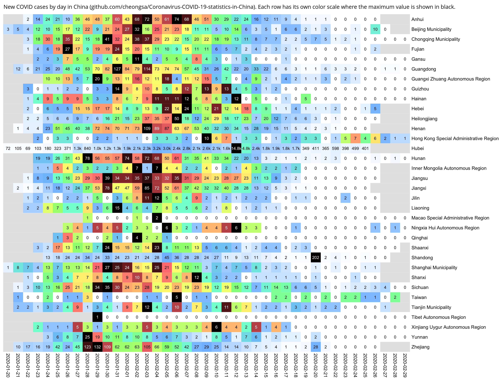